| |
最近更新日期：2006/11/10
本文已不再维护，更新文章请参考这里
|
我们最常讲的『架站』其实就是架设一个 Web 网站啦！那么什么是 Web 呢？那就是全球信息广播的意思 (World Wide
Web)，或者也可以称之为互连网吧！这个是我们目前的人类最常使用的 Internet
的协定之一啦！通常说的上网就是使用 WWW 来查询用户所需要的信息啰！^_^！目前的
WWW 服务器主要分为两大阵营，分别是 Unix-Like 上面的 Apache 与 Windows 上面的
IIS ，就以效能价格比来说，当然是 Linux 上面的 Apache 最棒啦！至于 WWW
服务器的类型可以分为静态与动态，而这些动态的网站里面，很多都是以目前的当红炸子鸡
Linux + Apache + MySQL + PHP 架设而成的，简称为 LAMP 的咯！这种动态 WWW
主机很有趣喔！他可以沟通 Server 与 Client 端的数据呢！赶紧来进入这个 LAMP
的世界吧！
|
 本章的行前准备工作 本章的行前准备工作
WWW 服务器能否提供浏览器来浏览其实与文件系统有很深的关系，如果你对于 Linux 档案的权限概念不足的话，
那么即使你架设好一部 WWW 服务器，您网站的数据也可能不能够被使用者所浏览的。
此外，由于 Linux 的 WWW 服务器含有很多的外挂模块，所以你可能会需要自行进行一些原始码的编译行为。
而你的 WWW 服务器很可能同时管理多部主机名的，所以 DNS 以及网络基础的部分也要很清楚的！
所以，您最好已经具有如下的基础：
WWW 的简史、资源以及服务器软件
你知道目前 (2006) 网络为什么会这么流行吗？其实都是 WWW 造成的啦。早在 1993 年左右，鸟哥初次接触到网络，
当时的网络较热门的大概就是一些资源下载的 FTP 网站以及很多文字热烈讨论的 BBS 站了。
数据虽然丰富，不过，总是觉得少了点什么。后来上了研究所，为了课业需要，
经常连上台湾的学术网络 (TANET) 进行一些学术数据的检索，当时大约是 1996 年左右。
因为上网就是要找数据而已，所以就慢慢的很少使用网络了。
过了几年后，再次使用图形接口的操作系统，竟然发现只要点几个小按钮，就会有很多网络上花花绿绿的文字与图案，
有的网站甚至提供影音的特效，当时真是相当的讶异！不过，由于图形影像的视觉方面要比 BBS
纯文本的数据吸引人，自然造成很多人喜欢流连在因特网上，人潮多当然就有商机！由于奇货可居，才有后来
90 年代末期的浏览器大战，
这个商业大战也造成后来 WWW 标准不被某些浏览器所支持的后果。
这些年由于搜索引擎、个人网志 (blog) 的流行，又将因特网推向另一个新境界！啊！
要学的东西真是很多啊～～@_@。底下让我们来了解了解什么是 WWW 以及他所需要的服务器软件，
还有一些浏览器相关的信息吧！
WWW 的简史、HTML
与标准制订 (W3C)
众所皆知的，目前因特网社会上最热门的协议就是 TCP/IP 了，而 TCP/IP 的应用方面则有
mail, dns, ftp, telnet 与 www 等等，其中造成 TCP/IP 大流行的应属 mail 与 www，尤其是 WWW 这个玩意儿。
WWW 是 World Wide Web 的缩写，其中 Web 有广播网的意思存在，
所以简称为全球信息网的就是了。WWW 可以结合文字、图形、影像以及声音等多媒体，
并透过超链接 (Hyper Text) 的方式将信息以 Internet 传递到世界各处去。
与其他的服务器类似的，你要连结上 WWW 网站时，该网站必需要提供一些数据，
而你的客户端则必需要使用可以解析这些数据的软件来处理，那就是浏览器啦！
简单的来说，你可以这样瞧一瞧 WWW server/client 的相关性：
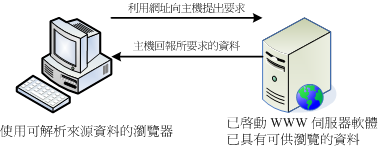
图一、WWW 主机与客户端的联机相关性
也就是说，你的 WWW 服务器不但需要一个可让客户端浏览器浏览的平台，还需要提供客户端一些数据才行！
那这些可供查询的数据有哪些类型？最主要的其实是 超文件卷标语言
(Hyper Text Markup Language, HTML)。
其实超文件卷标语言大多只是一些纯文本数据，然而透过浏览器对于一些标签 (<tag>) 的解释后，
就能够得到不同的文字格式、颜色显示等等。你可以使用任何一个浏览器连结到搜寻大师
http://www.google.com 网站，然后在其上的页面上按下鼠标右键，
选择察看原始码，你就能发现该网页是如何写成的了。
<!DOCTYPE html PUBLIC "-//W3C//DTD XHTML 1.0 Strict//EN"
"http://www.w3.org/TR/xhtml1/DTD/xhtml1-strict.dtd"> <==HTML的标准版本宣告
<html>
<head>
.....一些标头数据，例如 title 等等......
</head>
<body>
.....实际的数据放置位置......
</body>
</html>
|
HTML 之所以被称为卷标语言就如同上面的表格所示，他是由很多 <tag> 所组成的，主要分为两大区块，
一个是与标头有关的 <head> 区块，包括该网页所使用的编码格式与抬头等等。另一部份则是 <body>
所含有的实际网页内容数据啦。关于 HTML 不在本文的介绍内，你可以在市面上找到很多相关的书籍。而除了 HTML 之外，
目前的卷标语言还包括了 XHTML, CSS 风格语法等等，都值得参考喔。
知道了 WWW 的 server/client 架构后，再来我们要讨论的是，那 WWW 是怎么来的啊？
伯纳斯-李 (Tim Berners-Lee) 在 1980 年代为了更有效率的让欧洲核物理实验室的科学家可以分享及更新他们的研究成果，
于是他发展出一个 超文件传输协议 (Hyper Text Transport Protocol, HTTP)。
如同前面提到的，在这个协议上面的服务器需要软件，而客户端则需要浏览器来解析服务器所提供的数据。
那么这些软件怎么来的？
为了让 HTTP 这个协议得以顺利的应用，大约在 90 年代初期由伊利诺大学的国家超级计算机应用中心
(NCSA, http://www.ncsa.uiuc.edu/)
开发出服务器 HTTPd (HTTP daemon 之意)。HTTPd 为自由软件，所以很快的领导了 WWW 服务器市场。
后来网景通讯 (Netscape) 开发出更强大的服务器与相对应的客户端浏览器，那就是大家曾经熟悉的 Netscape
这套软件啦。这套软件分为服务器与浏览器，其中浏览器相对便宜，不过服务器可就贵的吓人了。
所以，在服务器市场上主要还是以 HTTPd 为主的。
后来由于 HTTPd 这个服务器一直没有妥善的发展，于是一群社群朋友便发起一个计划，
这个计划主要在改善原本的 HTTPd 服务器软件， 他们称这个改良过的软件为 Apache ，
取其『一个修修改改的服务器 (A patch server)』的双关语！ ^_^！这个 Apache 在 1996
年以后便成为 WWW 服务器上市占率最高的软件了 ( http://httpd.apache.org/)。
虽然 WWW 越来越重要，但相对的来说，客户端如果没有浏览器的话那么他们当然就无法去浏览 WWW
服务器所提供的数据。为了抢占浏览器的市占率，于是在 90 年代末期微软将 IE
浏览器内建在 Windows 操作系统内，此一决定也让当时相当广泛使用的 Netscape 浏览器 (Navigator) 市占率急速下降。
后来网景公司在 1998 年左右将浏览器的原始码部分开放成为自由软件，采用 Mozilla 通用授权 (MPL) 。
Mozilla ( http://www.mozilla.org/)
这个计划所开发的软件可不止浏览器而已，还包括邮件处理软件及网页编辑软件等等。
当然啦，其中最出名的就是浏览器软件『火狐狸 (firefox)』啦！那这玩意儿与 IE 有啥不同？
由于 IE 是整合在 Windows 操作系统核心内，
加上改版的幅度太慢，甚至 IE 使用的 HTML 标准语法解析行为都是微软自定义的标准，
并不全然符合因特网上的标准规范 (W3C, http://www.w3.org/)，导致服务器端所提供的数据并无法在所有的浏览器上都显示出相同的样式，
而且客户端也容易受到网络攻击。
firefox ( http://moztw.org/)
的发展就标榜小而美，因此程序相当的小，所以执行效能上面非常的快速，此外，对于超文件的解析上面，
firefox 主要依据 w3c 所制订的标准来发展的，所以任何以 w3c 的标准开发的网站，在 firefox
上面就能够得到设计者所希望的样式！目前 firefox 已经针对市面上最常见到的 Windows/Linux/Unix
等操作系统来进行支持，大家可以多多使用喔！^_^
由上面的介绍我们可以知道：
- WWW 是依据 HTTP 这个协议而来的，分为服务器端与客户端；
- Apache 是一个服务器端的软件，主要依据 NCSA 的 HTTPd 服务器发展而来，为自由软件；
- Mozilla 是一个自由软件的开发计划，其中 firefox 浏览器是相当成功的作品。
- 在撰写自己的网页数据时，尽量使用 W3C 所发布的标准，这样在所有的浏览器上面才能够顺利的显示出你想要的样子。
WWW
主机与浏览器所提供的资源设定
由前面的说明我们可以知道其实 WWW 服务器的重点是提供一些数据，这些数据必需要是客户端的浏览器可以支持显示才行。
那么这些数据是什么类型啊？很简单啊，当然就是档案啰。如此说来，我们必需要在服务器端先将数据文件写好，
并且 放置在某个特殊的目录底下，这个目录就是我们整个网站的首页了！
一般来说，这个目录很可能是在 /var/www/html/ 或者是 /srv/www/。我们的 CentOS 预设在 /var/www/html 喔。
好了，那么浏览器如何取得这个目录内的数据呢？你必需要在浏览器的『网址列』输入所需要的网址才行。
不过，现今的浏览器功能实在很多，他不只可以连上 WWW ，还可以连上类似 FTP 之类的网络协议。
所以你得要在网址列输入正确的网址，这个网址包括这样：
<协定>://<主机地址或主机名>[:port]/<目录资源>
上头就是我们常常听到的 URL (Uniform Resource Locator) 啦！他可以这样看的：
协定：
比较常见的协议有 http, https, ftp, telnet 等等，还有类似 news, gopher 等。
这个协议在告知浏览器『请你利用此一协议连接到主机端』的意思。举例来说，如果你下达：
http://ftp.isu.edu.tw 这表示浏览器要连结到
义守大学的 http (亦即 port 80) 的意思。如果是 ftp://ftp.isu.edu.tw 则代表连结到义守大学的 ftp (port 21) 啦！
因为使用的协议不同，所以当然响应的数据也不相同的。不过，
万一对方服务器的埠口启动在非正规的埠号，例如将 http 启动在 port 81 时，那你就得要这样写：
http://hostname:81/ 。
就是主机在因特网所在的 IP 位置。如果是主机名的话，当然得要透过名称解析器啰！
一般来说，虽然使用 IP 就能够架设 WWW 网站，不过建议您还是申请一个好记又合法的主机名比较好！
目录资源：：
刚刚不是提到首页的目录吗？在首页目录下的相对位置就是这个目录资源啦。
举例来说，鸟哥的网站 www 数据放置在我主机的 /var/www/html/ 当中，所以说：
- http://linux.vbird.org --> /var/www/html/
- http://linux.vbird.org/linux_basic/index.php --> /var/www/html/linux_basic/index.php
另外，通常首页目录底下会有个特殊的文件名，例如 index.html 或 index.??? 等。举例来说，如果你直接按下：
http://linux.vbird.org 会发现其实与 http://linux.vbird.org/index.php 是一样的！
这是因为 WWW 服务器会主动的以该目录下的『首页』来显示啦！
所以啦，我们的服务器会由于浏览器传来的要求协议不同而给予不一样的响应数据。
那你了解到网址列的意义了吗？^_^！再来，如果浏览器是以 http://hostname 的型态来向服务器要数据时，
那么浏览器与服务器端是如何传递数据的呢？基本上有这几种方法：
- GET
就是直接向 WWW 服务器要求网址列上面的资源，这也是最常见的。此外，使用 GET
的方式可以直接在网址列输入变量喔。举例来说，鸟哥的讨论区有一篇提问的智慧，
他的网址是：『http://phorum.vbird.org/viewtopic.php?t=96』，发现那个 ?t=96 了吗？
t 就是变量， 96 就是这个变量的内容。如果你将问号后面的数据拿掉时，瞧瞧会出现什么后果？
这么说，您可以明白 GET 的处理了吧？
- POST
这也是客户端向主机端提出的要求，只是这个要求里面含有比较多的数据就是了。
举例来说，讨论区里面不是常常有留言的选项吗，如果你选择留言的话不是会在浏览器冒出一个框框让你填入资料吗！
当按下传送后，那些框框内的数据就会被浏览器包起来传送至 WWW 服务器了。
POST 与 GET 不相同喔，
GET 可以在网址列取得客户端所要求的变量，不过 POST 就不是使用网址列的功能了。
- HEAD
主机端响应给 Client 端的一些数据文件头而已；
- OPTIONS
主机端响应给 Client 端的一些允许的功能与方法；
- DELETE
删除某些资源的举动。
常见的是 GET 这个项目啦！如果有大量数据由客户端上传到 WWW 服务器端时，才会使用到 POST 这个项目。
你还是得需要注意一下这些举动，因为后续的登录档分析内容都是使用这种动作来分析的呦！
WWW 服务器的类型：WWW
平台、网页程序语言与数据库(LAMP)
前面我们提到 WWW 服务器软件的研发，以目前来说，市占率较高的应该是 Apache 与 IIS 这两个玩意儿，
Apache 是自由软件，可以在任何操作系统上面安装的，至于 IIS 则是 Windows 家族开发出来的，
仅能在 Windows 操作系统上面安装与执行。由于操作系统平台不一样，所以其上安装的软件当然也不相同。
底下就让我们来聊一聊目前网站的一些特色吧！
目前 Internet 上头提供 WWW 数据的主机大致上我们可以粗分为两种：
仅提供用户浏览的静态网页：
这种类型的网站大多是提供『静态』的网页，或许有提供一些动画图示，但基本上就仅止于此啦！
因为他仅提供你来浏览，Server 不需要与 Client 端互动，所以你可以到该网站上去浏览，
但是无法进行进行数据的上传喔！目前主要的免费虚拟主机大多是这种类型，所以，你只要依照 HTML
的语法写好你的网页，并且上传到该网站空间上，那么你的数据就可以让大家浏览了！
提供用户互动接口的动态网站：
这种类型的网站可以让服务器与使用者互动，常见的例如讨论区论坛与留言版，包括一些部落格也都是属于这类型。
这类型的网站需要的技术程度比较高，因为他是藉由『网页程序语言』来达成与使用者互动的行为，
常见的例如 PHP 网页程序语言，配合 MySQL 数据库系统来进行数据的读、写。整个互动可以使用下图来说明：
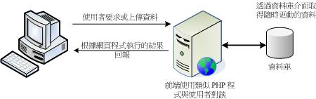
图二、动态网站的网页程序语言与数据库接口
这就是所谓的主机端工作任务接口 (Server Side Include, SSI)，因为不论你要求的数据是什么，
其实都是透过服务器端同一支网页程序在负责将数据读出或写入数据库，处理完毕后将结果传给客户端的一种方式，
变动的是数据库内的数据，网页程序其实并没有任何改变的。这部份的网页程序包括 PHP, ASP, Perl....
很多啦！
另外一种交互式的动态网页主要是在客户端达成的！举例来说，我们可以透过利用所谓的 Java scripts 这种语法，
将可执行的程序 (java script) 传送给客户端，客户端的浏览器如果有提供 java script 的功能，
那么该程序就可以在客户端的计算机上面运作了。由于程序是在客户端计算机上执行，
因此如果服务器端所制作的程序是恶意的，那么客户端的计算机就可能会遭到破坏。
这也是为啥很多浏览器都已经将一些危险的 java script 关闭的原因。
另外一种可在客户端执行的就是 flash 动画格式，在这种动画格式内还可以进行程序设计，
因此客户端只要拥有可以执行 flash 动画的软件，那就可以利用这个软件来达到交互式的对谈。
这些都算是动态网站所提供的功能喔！
从上面的说明你可以知道动态网站是目前比较热门的，像是近两年来如同雨后春笋一般冒出来的个人部落格 (blog)
就是很经典的动态网站之一。而由 图二我们也知道要做成这样的动态网站你必需要有：
- 支持的操作系统：让所需要的软件都能够安装执行啊；
- 可运作的 WWW 服务器：例如 Apache 与 IIS 等 WWW 服务器平台软件；
- 网页程序语言：包括 perl, PHP, JSP, CGI, ASP 等等都算是啦！
- 数据储存之数据库系统：包括 MySQL, MSSQL, PostgreSQL 以及甲骨文 (Oracle) 等等。
在整个平台设计上面，目前常见的有两大系统，一个是 Linux
操作系统上面，搭配 Apache + MySQL + PHP 等而达成，
这个系统被称为 LAMP 。另一个则是微软的 IIS + MSSQL + ASP (.NET) 服务器。
在能见度与市占率方面，应该还是以 LAMP 为主吧！ ^_^！上面这三个小东西让我们来谈谈先：
Apache (http://www.apache.org)
我们前面提到，1995 年以前就有很多的 WWW 服务器软件，其中以 HTTPd 占有率较高。
后来 HTTPd 经过多次臭虫的修订后，才在 1995 年后发布 Apache (A patche server) 的啦！这东西就是主要提供 WWW
的服务器平台，后面谈到的 MySQL 及 PHP 两个咚咚都需要用这玩意儿来处理。
PHP (http://www.php.net/)
按照官方的说法来说，PHP 是一个工具，他可以被用来建立动态网页，PHP 程序代码可以直接在 HTML 网页当中嵌入，
就像你在编辑 HTML 网页一样的简单。所以说， PHP 是一种『程序语言』，这种程序语言可以直接在网页当中编写，
不需要经过编译即可进行程序的执行。由于具有：自由软件、跨平台、容易学习及执行效能高等优点，
目前是很热门的一个设计网页的咚咚喔！你可以在市面上找到很多相关的书籍来参考的。
MySQL (http://www.mysql.org/)
传统的档案读取是很麻烦的，如果你只要读取该档案当中的一小部分，系统还是会将整个档案读出来，
若又有多人同时读取同一个档案时，那就会造成效能与系统上的问题，所以才会有数据库系统的推出。
数据库其实是一种特殊格式的档案，这种档案必需要透过特殊接口 (数据库软件)
来进行读写。由于这个特殊接口已经针对数据的查询、写入做过优化设计，
因此很适合多人同时写入与查询的工作。
针对数据库的语法有所谓的 SQL 标准语法，任何根据这种数据检索语法发展出来的数据库，就称为 SQL 数据库。
比较知名的自由软件数据库系统有 MySQL 及 PostgreSQL ，其中 MySQL 的使用率又比较高一些。
MysQL 可以透过网页程序语言来进行读写的工作，因此很适合例如讨论区、论坛等的设计，
甚至很多商业网站的重要数据也是透过 MySQL 这个数据库软件来存取的呢！
加密的网页资料 (SSL)
及第三方公正单位
关于 HTTP 这个传输协议当中，你必需要知道的是：『这个传输协议传输数据是以明码传送的』，
所以你的任何数据封包只要被监听窃取的话，那么该数据就等于是别人的啦！那想一想，
你有过上线刷卡的经验吗？上线刷卡只要输入你信用卡的卡号与相关的截止日期后，就能够进行交易了。
那如果你的数据在 Internet 上面跑时是明码的情况下，真要命！那你的信用卡不就随时可能会被盗用？
虽然大多数 Internet 上面的 WWW 网站所提供的资料是可以随意浏览的，不过如同上面提到的，
一些物流交易网站的数据以及关于你个人的重要机密数据当然就不能这样随意传送啦！
这个时候就有需要用到 https://hostname 这种联机的方式啦！这种方式是透过 SSL 加密的机制喔！
Secure Socket Layer (SSL)
还记得我们在 SSH 服务器当中介绍过他联机的机制吧？
就是利用非配对的 key pair (Public + Private kye) 来组成密钥，然后透过公钥加密后传输，
传输到目标主机后再以私钥来解密，如此一来数据在 Internet 上面跑就以加密的方式，
想当然尔，这些数据自然就比较安全啦！SSL 就是利用在 WWW 传输上面的加密方式啦！
当浏览器端与 WWW 服务器端同时支持 SSL 的传输协议时，在联机阶段浏览器与服务器就会产生那把重要的密钥！
产生密钥后就能够利用浏览器来传送与接收加密过的重要数据啦！要达成这样的机制，
你的 WWW 服务器必需要启动 http s 这个重要的传输协议，而浏览器则必需要在网址列输入 https://
开头的网址，那两者才能够进行沟通与联机。要注意的是，在某些很旧的浏览器上面是不支持 SSL 的，
所以在那些旧的浏览器上就无法达成 https 的联机啦！
想一想 SSL 这个机制有什么问题？他的问题就是：『那把 Public key 是服务器产生的』！
这是什么问题？因为 public key 是服务器产生的，所以那个服务器如果是诈骗集团所造假产生的网站，
那么你连上去后，即使是加密的数据，到了对方的主机上还是会被解开啊！那就麻烦了～
这个时候就有第三方公正单位来帮忙啦！
所谓的 CA 就是一个公认的公正单位，你可以向其注册一个 public key (讲到注册你就要知道....
这东西是要钱的意思！)，
那么当客户端的浏览器在浏览时，该浏览器会主动的向 CA 单位确认该 public key 是否为合法注册过的，
如果是的话，那么该次联机才会建立，如果不是呢？那么浏览器就会发出警告讯息，告知用户应避免建立联机啊。
所以说，如此一来 WWW 服务器不但有公正单位的背书，用户在建立联机时也比较有保障！
更多关于 SSL 以及 CA 的介绍，可以约略参考一下：
客户端常见的浏览器
咱们前面谈到 WWW 服务器是 Server/Client 的架构，而客户端使用的软件就是浏览器啊！
目前比较知名的浏览器主要有两款，包括 Windows 内建的 IE 这玩意儿，另一个则是自由软件 firefox
(火狐狸) 。
由于 浏览器可以连结到因特网上，所以浏览器也有可能被入侵！
其中由于 IE 直接内嵌至 Windows 的核心当中，所以如果 IE 有漏洞时，对于系统的损害是很大的！
所以无论如何，请记得『务必要随时更新到最新版本的浏览器』才行。建议您可以使用 firefox
这个小巧玲珑的浏览器啊！
除了窗口接口的浏览器软件之外，其实还有两个可以在文字接口底下进行浏览与网页下载的程序，
分别是：
这两个指令我们已经在 常用网络指令章节谈过了，
请自行前往参考喔！
WWW (Apache) 服务器基本设定
从前面的说明当中，我们知道在 Linux 上面要达成网页服务器 (WWW) 需要 Apache 这套服务器软件吶！
不过 Apache 仅能提供最基本的静态网站数据而已，想要达成动态网站的话，那么最好还是需要
PHP 与 MySQL 的支援才好。所以底下我们将会以 LAMP (Linux + Apache + MySQL + PHP) 作为安装与设定的介绍，
加油吧！ ^_^
LAMP 所需套件与其结构
既然我们已经是 Linux 操作系统，而且使用的是号称完全兼容于 Red Hat Enterprise Linux 的 CentOS 版本，
那当然只要利用 CentOS 本身提供的 Apache, PHP, MySQL 即可！ 不建议您自行利用
tarball 安装你的 LAMP 服务器。因为自行安装不但手续麻烦，而且也不见得比系统默认的套件稳定。
除非您有特殊的需求 (例如你的某些 Apache 插件需要较高的版本，或者是 PHP, MysQL 有特殊版本的需求)，
否则请使用 yum 来进行套件的安装即可。
那么我们的 LAMP 需要哪些东西呢？你必需要知道的是， PHP 是挂在 Apache 底下执行的，
而我们要用网页的 PHP 程控 MySQL 时，你的 PHP 就得要支持 MySQL 的模块才行！
所以你至少需要底下几个套件：
- httpd
- mysql
- mysql-server
- php
- php-devel (这个与 PHP 加速软件有关)
- php-mysql
要注意， Apache 目前有几种主要版本，包括 1.3.x, 2.0.x, 以及 2.2.x 等等，在 1.3.x 以前的版本通常取名为 apache
，2.x 以后则称为 httpd 啰！请与您的 distribution 比较看看先。至于 CentOS 4.x 则是提供 Apache 2.0.x 这个版本啦。
如果你没有安装的话，请直接使用 yum 或者是原本光盘来安装先：
[root@linux ~]# yum install httpd mysql-server php php-devel php-mysql
|
先来了解一下 Apache 2.0.x 这个版本的相关结构，这样才能够知道如何处理我们的网页数据啊！
- /etc/httpd/conf/httpd.conf (主要配置文件)
最主要的配置文件，其实整个 Apache 也不过就是这个配置文件啦！里面真是包山包海啊！
不过很多其他的 distribution 都将这个档案拆成数个小档案分别管理不同的参数。
但是主要配置文件还是以这个档名为主的！你只要找到这个档名就知道如何设定啦！
- /etc/httpd/conf.d/*.conf (很多的额外参数档，扩展名是 .conf)
这是 CentOS 的特色之一，如果你不想要修改原始配置文件 httpd.conf 的话，那么可以将你自己的额外参数档独立出来，
例如你想要有自己的额外设定值，可以将他写入 /etc/httpd/conf.d/vbird.conf (注意，扩展名一定是 .conf 才行)
而启动 Apache 时，这个档案就会被读入主要配置文件当中了！这有什么好处？好处就是当你系统升级的时候，
你几乎不需要更动原本的配置文件，只要将你自己的额外参数档复制到正确的地点即可！ ^_^！维护更方便啦！
- /usr/lib/httpd/modules/
Apache 支持很多的模块，所有你想要使用的模块默认是放置在这个目录当中的！
- /var/www/html/
这就是我们 CentOS 预设的『首页』所在目录啦！当你输入『http://localhost』时所显示的数据所在。
- /var/www/error/
如果因为主机设定错误，或者是浏览器端要求的数据错误时，在浏览器上出现的错误讯息就以这个目录的默认讯息为主！
- /var/www/icons/
这个目录提供 Apache 默认给予的一些小图示，你可以随意使用啊！当你输入『http://localhost/icons/』
时所显示的数据所在。
- /var/www/cgi-bin/
默认给一些可执行的 CGI (网页程序) 程序放置的目录；当你输入『http://localhost/cgi-bin/』
时所显示的数据所在。
- /var/log/httpd/
预设的 Apache 登录档都放在这里，对于流量比较大的网站来说，这个目录要很小心，
因为以鸟哥网站的流量来说，一个星期的登录文件数据可以大到 500MBytes
至 1GBytes 左右，所以你务必要修改一下你的 logrotate 让登录档被压缩，否则.....
- /usr/sbin/apachectl
这个就是 Apache 的主要执行档，这个执行档其实是
shell script 而已，
他可以主动的侦测系统上面的一些设定值，好让你启动 Apache 时更简单！
- /usr/sbin/httpd
呵呵！这个才是主要的 Apache 二进制执行文件啦！
- /usr/bin/htpasswd (Apache 密码保护)
在某些网页当你想要登入时你需要输入账号与密码对吧！那 Apache 本身就提供一个最基本的密码保护方式，
该密码的产生就是透过这个指令来达成的！相关的设定方式我们会在 WWW 进阶设定当中说明的。
至于 MySQL 方面，你需要知道的几个重要目录与档案有：
- /etc/my.cnf
这个是 MySQL 的配置文件，包括你想要进行 MySQL 数据库的优化，或者是针对 MySQL 进行一些额外的参数指定，
都可以在这个档案里面达成的！
- /var/lib/mysql/
这个目录则是 MySQL 数据库放置的所在处啦！当你有启动任何 MySQL 的服务时，
请务必记得在备份时，这个目录也要完整的备份下来才行啊！
另外，在 PHP 方面呢，你应该也要知道几个档案喔：
- /usr/lib/httpd/modules/libphp4.so
PHP 这个套件提供给 Apache 使用的模块！这也是我们能否在 Apache 网页上面设计 PHP 程序语言的最重要的咚咚！
务必要存在才行！
- /etc/httpd/conf.d/php.conf
那你要不要手动将该模块写入 httpd.conf 当中？不需要的，因为系统主动将 PHP 设定参数写入这个档案中了！
而这个档案会在 Apache 重新启动时被读入，所以 OK 的啦！
- /etc/php.ini
就是 PHP 的主要配置文件，包括你的 PHP 能不能允许使用者上传档案？能不能允许某些低安全性的标志等等，
都在这个配置文件当中设定的啦！
- /etc/php.d/mysql.ini, /usr/lib/php4/mysql.so
你的 PHP 是否可以支持 MySQL 接口呢？就看这两个东西啦！这两个咚咚是由 php-mysql 套件提供的呢！
- /usr/bin/phpize, /usr/include/php/
如果你未来想要安装类似 PHP 加速器以让浏览速度加快的话，那么这个档案与目录就得要存在，
否则加速器软件可无法编译成功喔！这两个数据也是 php-devel 套件所提供的啦！
基本上我们所需要的几个套件他的结构就是这样啦！上面提到的是 Red Hat 系统 (RHEL, CentOS, FC) 所需的资料，
如果是 SuSE 或其他版本的数据，请依照您的 distribution 管理套件的指令 (rpm 或 dpkg) 去查询一下，
应该就能够知道各个重要数据放置在哪里啦！这些数据很重要，你必需要对放置的地点有点概念才行喔！
httpd.conf 的基本设定
在开始设定 Apache 之前，你要知道由于主机名对于 WWW 是有意义的，所以虽然利用 IP 也能架设 WWW 服务器，
不过建议您还是 申请一个合法的主机名比较好。
如果是暂时测试用的主机所以没有主机名时，那么至少在你的 /etc/hosts 内需要有一行：
[root@linux ~]# vi /etc/hosts
127.0.0.1 localhost.localdomain localhost
|
这样在启动你的 Apache 时才不会发生找不到完整主机名 (FQDN) 的错误讯息。此外，
Apache 只是个服务器平台而已，你还需要了解 HTML 以及相关的网页设计语法，
如此才能丰富你的网站。对于想要设计网页的朋友来说，应用软件或许是很好入门，
不过想要完整的了解网站设计的技巧，还是研究一下基础的 HTML 或 CSS 比较妥当。
台湾有个不错的网站介绍给你：
你可以在上头发现不少的网页制作范例，包括一些特殊的功能喔！如果你真的对于一些基础语法有兴趣，
并且也想要开发一些所谓的『无障碍网页空间』的话，那么可以造访一下 http://www.w3c.org 所列举的标准语法，或者是行政院的无障碍网页空间申请规范
( http://enable.nat.gov.tw/)
相信会有所收获的啦！
终于要来谈一谈如何设定 Apache 这个 httpd.conf 配置文件了！再次强调，每个 distribution
的这个档案内容都不很相同，所以你必需要自行找出相关的配置文件才行喔！那么这个 httpd.conf
的设定为何呢？他的基本设定是这样的：
<设定项目>
此设定项目内的相关参数
...........
</设定项目>
|
举例来说，如果你想要针对我们的首页 /var/www/html/ 这个目录提供一些额外的功能，那么：
<Directory "/var/www/html">
Options Indexes
...........
</Directory>
|
几乎都是这样的设定方式喔！特别留意的是，如果你有额外的设定时，不能随便在 httpd.conf
里头找地方写入！否则如果刚好写在 <Directory>...</Directory> 里面，呼呼！
那么就会发生错误啦！需要前前后后的找一找喔！好啦，底下咱们先来聊一聊 Apache 主机的基础设定吧！
针对主机环境的设定项目
Apache 针对主机的设定项目方面，包括响应给客户端的主机版本、主机名、主机配置文件顶层目录等。
底下咱们就来谈一谈：
[root@linux ~]# vi /etc/httpd/conf/httpd.conf
ServerTokens OS
# 这个项目在告知客户端 WWW 服务器的版本与操作系统。不需要更动他。
# 如果你不想要告知太多主机的信息，这个项目将 OS 改成 Minor 吧！
ServerRoot "/etc/httpd"
# 这个是配置文件的最顶层目录，通常使用绝对路径。底下某些设定数据使用相对路径时，
# 就是与这个设定值有关的下层目录啦！不需要更动他。
PidFile run/httpd.pid
# 放置 PID 的档案，可方便 Apache 软件的管理啦！只有相对路径吧！
# 考虑 ServerRoot 设定值，所以档案在 /etc/httpd/run/httpd.pid ！
Timeout 120
# 持续联机阶段如果等待超过 120 秒则该次联机就中断。
# 一般来说，此数值在 300 秒左右即可，不需要修改这个原始值啦。
KeepAlive On <==最好将预设的 Off 改为 On 啦！
# 是否允许持续性的联机，亦即一个 TCP 联机可以具有多个档案资料传送的要求。
# 举例来说，如果你的网页内含很多图档，那么这一次联机就会将所有的数据送完，
# 而不必每个图档都需要进行一次 TCP 联机。预设为 Off 请改为 On 较佳。
MaxKeepAliveRequests 500 <==可以将原本的 100 改为 500 或更高
# 与上个设定值 KeepAlive 有关，当 KeepAlive 设定为 On 时，则这个数值可决定
# 该次联机能够传输的最大传输数量。为了增进效能则可以改大一点！0 代表不限制。
KeepAliveTimeout 15
# 在允许 KeepAlive 的条件下，则该次联机在最后一次传输后等待延迟的秒数。
# 当超过上述秒数则该联机将中断。设定 15 差不多啦！如果设定太高 (等待时间较长)，
# 在较忙碌的系统上面将会有较多的 Apache 程序占用资源，可能有效能方面的困扰。
<IfModule prefork.c>
StartServers 8
MinSpareServers 5
MaxSpareServers 20
ServerLimit 256
MaxClients 256
MaxRequestsPerChild 4000
</IfModule>
<IfModule worker.c>
StartServers 2
MaxClients 150
MinSpareThreads 25
MaxSpareThreads 75
ThreadsPerChild 25
MaxRequestsPerChild 0
</IfModule>
# 上面这一串其实是两个与服务器联机资源有关的设定项目。默认的项目对于一般
# 小型网站来说已经很够用了，不过如果你的流量比较大时，或许可以修订一下呢！
# 这两个模块都是用在提供使用者联机的资源 (process)，设定的数量越大时，
# 代表系统会启动比较多的程序来提供 Apache 的服务，反应速度就比较快。
# a. 针对模块来说：
# worker 模块占用的内存较小，对于流量较大的网站来说，是一个比较好的选择
# profork 虽然占用较大的内存，不过速度与 worker 差异不大，并且 prefork
# 内存使用设计较为优秀，可以在很多无法提供 debug 的平台上面进行自我除错
# b. 细部设定的内容方面：(以 Prefork 为例， worker 意义相同)
# StartServers 代表启动 Apache 时就启动的 process 数量
# MinSpareServers, MaxSareServers 代表最大与最小的备用程序数量
# MaxClients 最大的同时联机数量，也就是 process 数不会超过此一数量。
# 假设有 10 个人连上来，则 apache 的程序数应有 15-30 个之意。
# MaxRequestsPerChild 每个程序能够提供的最大传输次数要求。举例来说，
# 如果有个使用者连上服务器后(一个 process)，却要求数百个网页，
# 当他的要求数量超过此一数值，则该程序会被丢弃，另外切换一个新程序。
# 这个设定可以有效的控管每个 process 在系统上的『存活时间』。
# 除非你的网站流量特别大，否则上面的默认值已经够你使用的了。而如果你的内存
# 不够大的话，那么 MaxClients 反而要调小一点，例如 150 ，否则效能不佳。
Listen 80
# 与监听接口有关，默认开放在所有的网络接口啊！也可修改埠口，如 8080
LoadModule access_module modules/mod_access.so
.....(底下省略).....
# 加载模块的设定项目。Apache 提供很多有用的模块给我们使用了！
Include conf.d/*.conf
# 因为这一行，所以放置到 /etc/httpd/conf.d/*.conf 的设定都会被读入
User apache
Group apache
# 前面提到的 prework, worker 等模块所启动的 process 之拥有者与群组设定。
# 这个设定很重要，因为未来你提供的网页档案能不能被浏览都与这个身份有关啊！
ServerAdmin dmtsai@linux.vbird.tsai <==改成你自己的 email 吧
# 系统管理员的 email ，当网站出现问题时，错误讯息显示的联络信箱。
ServerName linux.vbird.tsai <==自行设定好自己的主机名较佳！
# 设定主机名，如果没有指定的话，预设会以你的 hostname 为依据。
# 千万记得，你填入的这个主机名要找的到 IP 喔！(DNS 或 /etc/hosts)
UseCanonicalName Off
# 是否使用标准主机名？如果你的主机有多个主机名，若这个设定为 On，
# 那么 Apache 只接受上头 servername 指定的主机名联机而已。请使用 Off。
|
在基本设定项目比较有趣的在于系统的效能议题啦！初次接触的朋友可能会觉得很好奇，怎么两个多线程模块
(worker 与 prefork) 有个 MaxClients 的设定，那么那个 MaxKeepAliveRequests 又是什么？
你可以这么想：
- MaxClients 控制可以『同时连上 WWW 服务器的总联机要求』数量，亦即想成最高实时在线人数啦；
- MaxKeepAliveRequests 则是每个 Clients 的该次联机中，可以要求的最高传输数据量。
这样说的话，对于联机有没有较清楚的概念啰？不过你要注意的是，那个 MaxClients 的数量不是越高越好，
因为他会消耗物理内存，所以如果你设定太高导致超出物理内存能够容许的范围，
那么效能反而会降低 (因为系统会使用速度较慢的 swap 啊！)，此外， MaxClients
也在 Apache 编译时就指定最大值了，所以你也无法超出系统最大值，除非....你重新编译 Apache 啦！
那，apache 到底是使用那个模块啊？prefork 还是 worker ？事实上 CentOS
将这两个模块分别放到不同的执行档当中，分别是：
- /usr/sbin/httpd：使用 prefork 模块；
- /usr/sbin/httpd.worker：使用 worker 模块。
那如何决定你使用的是哪一支程序？你可以去查阅一下 /etc/sysconfig/httpd ，
就能够知道系统默认提供 prefork 模块，但你可以透过修改 /etc/sysconfig/httpd 来使用 worker 模块的。
如果你很有好奇心，那么可以分别试着启动这两种模块啊！ ^_^
目前的因特网传输的数据编码多是以万国码 (UTF-8) 为主，不过在台湾还是有相当多的网站使用的是 Big5
的繁体中文编码的啊！如果你的 Apache 默认是以 UTF-8 编码来传输数据，但你 WWW 的数据却是 big5 ，
那么客户端将会看到『乱码』！虽然可以透过调整浏览器的编码来让数据正确显示，不过总是觉得很讨厌。
此时，你应该可以调整一下底下的两个参数的喔！
[root@linux ~]# vi /etc/httpd/conf/httpd.conf
# 先确定有底下这几行，理论上，应该都会有这几行啦！
AddLanguage zh-TW .zh-tw
AddCharset Big5 .Big5 .big5
# 找到底下这一行，应该是在 730 行左右
AddDefaultCharset UTF-8
# 你有两种作法，一种是『直接指定由 WWW 宣告 Big5 编码，而不用网页表头的宣告』：
AddDefaultCharset Big5
# 另一种则是不要宣告预设语系，由网页表头宣告的啦！直接批注起来即可
# AddDefaultCharset Big5
# 找到底下这一行(大约在 711 行)，这一行在设定显示语系的优先级
LanguagePriority en ca ....(中间省略).... sv zh-CN zh-TW
# 将语系处理的优先级中，以中文为优先吧！
LanguagePriority zh-TW en ca ....(中间省略).... sv zh-CN
|
你必须要注意的是，如果你已经在客户端浏览器上面浏览过非 Big5 的网页，
那么你修改过这个设定值后， 仍然要将浏览器的快取 (cache)
清除才行！否则仍然会看到乱码！网友们已经回报过很多次了，
这不是 Apache 的问题，而是客户端浏览器的快取所产生的啦！记得处理处理！
另外，有没有『 AddDefaultCharset Big5 』这一个设定值的存在是差很多的！
如果你指定这个设定项目后，代表『由 WWW 发送到客户端的网页预设将都以 Big5 编码为主』，
所以如果你在 /var/www/html/ 内的网页数据有 big5, utf8 不同编码的话，那么使用 utf8
编码的网页将会在浏览器上面显示乱码！最好的作法是将该设定值批注掉，然后再你的网页上面写入：
<html>
<head>
<meta http-equiv="Content-Type" content="text/html; charset=big5" >
....其他省略....
|
这样一来你的网页就会向浏览器说明编码的格式，嘿嘿！就可以正确的显示出中文了！
开头的时候不是讲过 CentOS 的 Apache 预设首页放置在 /var/www/html 这个目录吗？
为什么呢？因为 DocumentRoot 这个设定值的关系啦！此外，由于
Apache 允许 Internet 对我们的数据进行浏览，
所以你当然必须要针对可被浏览的目录进行权限的相关设定，那就是 <Directory>
这个设定值的重要特色！先让我们来看看预设的主网页设定吧！
[root@linux ~]# vi /etc/httpd/conf/httpd.conf
DocumentRoot "/var/www/html" <==可以改成你放置首页的目录！
# 这个设定值重要到不行，因为他规范了 WWW 服务器主网页所放置的『目录』所在。
# 这个设定值是可以被随意更动的，不过更动之后你必须要针对该目录进行权限设定，
# 也就是底下要讲到的 Directory 这个设定值来规范目录的权限才行喔！
<Directory />
Options FollowSymLinks
AllowOverride None
</Directory>
# 这个设定值是针对 WWW 服务器的『预设环境』而来的，因为针对『/』的设定嘛！
# 建议可以设定的严格一点，就是保留上述的预设设定即可 (已经很严格了！)
<Directory "/var/www/html">
Options Indexes FollowSymLinks <==建议拿掉 Indexes 比较妥当！
AllowOverride None
Order allow,deny
Allow from all
</Directory>
|
这个地方则是针对 /var/www/html 这个目录来设定权限啦！就是咱们首页所在目录的权限。
主要的几个设定项目的意义是这样的：
- Options：
表示这个目录内能够进行的动作，亦即是权限设定啦！主要的设定值：
- Indexes：
如果在此目录下找不到『首页档案』时，
就显示整个目录下的文件名，『首页档案』与 DirectoryIndex 设定值有关。
- FollowSymLinks：
让在此目录下的链接文件可以链接出此目录外。
一般来说被 chroot
的程序将无法离开其目录，也就是说默认的情况下，你在 /var/www/html
底下的链接文件只要链接到非此目录的其他地方，则该连结档预设是失效的。
但使用此设定即可让连结档有效的离开本目录。
- ExecCGI：
让此目录具有执行 CGI
程序的权限，非常重要！举例来说，目前常见的 OpenWebMail 使用了很多的 perl 的程序，
你要让 openwebmail 可以执行，就得要在 openwebmail 程序所在目录
拥有 ExecCGI 的权限。注意，不要让所有目录均可使用 ExecCGI ！
- Includes：
让一些 Server-Side Include 程序可以运作。建议可以加上去！
- MultiViews：
这玩意儿有点像是多国语言的支持，与语系数据
(LanguagePriority)
有关。最常见在错误讯息的回报内容，在同一部主机当中，
可以依据客户端的语系而给予不同的语言显示呢！默认在错误回报讯息当中存在，
你可以检查一下 /var/www/error/ 目录下的数据喔！
- AllowOverride：
表示是否允许额外配置文件 .htaccess 的权限复写？我们可以在 httpd.conf
内设定好所有的权限，不过如此一来若使用者自己的个人网页想要修改权限时将会对管理员造成困扰。因此
Apache 默认可以让用户以目录底下的 .htaccess 档案内复写 <Directory> 内的权限设定。
这个项目则是在规定 .htaccess 可以复写的权限类型有哪些。常见的有：
- ALL：全部的权限均可被复写；
- AuthConfig：仅有网页认证 (账号密码) 可复写；
- Indexes：仅允许 Indexes 方面的复写；
- Limits：允许使用者利用 Allow, Deny 与 Order 管理可浏览的权限；
- None：不可复写，亦即 .htaccess 档案失效去！
这部份我们在进阶设定时会再讲到的！
- Order：
决定是否可被浏览的权限设定啦！主要有两种方式：
- deny,allow：以 deny 优先处理，但没有写入规则的则默认为 allow 喔。
- allow,deny：以 allow 为优先处理，但没有写入规则的则默认为 deny 喔。
所以在预设的环境中，因为是 allow,deny 所以预设为 deny (不可浏览)，
不过在下一行有个 Allow from all ，allow 优先处理，因此全部(all)
客户端皆可浏览啦！这部份我们会在进阶安全设定当中再提及低。
除了这些数据之外，你还得要知道的是底下这个玩意儿：
[root@linux ~]# vi /etc/httpd/conf/httpd.conf
DirectoryIndex index.html index.html.var <==可能需要修改的项目！
# 如果客户端在网址列只输入到目录，例如 http://localhost/ 时，那么 Apache
# 将拿出那个档案来显示？这个档案也被称为预设的首页啦！一般来说是以
# index.* 为档名开头，但 Windows 则以 default.asp 之类的档名为开头的。
# 如果你想要让类似 index.pl 或 index.cgi 也可以是首页，那可以改成：
# DirectoryIndex index.html index.htm index.cgi index.php3 ...
# 这个项目与刚刚谈到的 Options 里面的 Indexes 有关喔！
Alias /icons/ "/var/www/icons/"
<Directory "/var/www/icons">
Options Indexes MultiViews
AllowOverride None
Order allow,deny
Allow from all
</Directory>
# 这个 Alias 很有趣的！是制作出类似连结档的东西啦！
# 当你输入 http://localhost/icons 时，其实你的 /var/www/html 并没有 icons
# 那个目录，不过由于 Alias 的关系，会让该网址直接连结到 /var/www/icons/ 下。
# 这里面预设有很多 Apache 提供的小图示喔！而因为设定了一个新的可浏览目录，
# 所以你瞧，多了个 <Directory> 来规定权限了吧！ ^_^
ScriptAlias /cgi-bin/ "/var/www/cgi-bin/"
<Directory "/var/www/cgi-bin">
AllowOverride None
Options None
Order allow,deny
Allow from all
</Directory>
# 与上面的 icons 类似，不过这边却是以 ScriptAlias 为设定值！
# 这个设定值可以指定该目录底下为『具有 ExecCGI 』能力的目录所在喔！
# 所以你可以将类似 Open webmail 的程序给他放置到 /var/www/cgi-bin 内，
# 就不必额外设定其他的目录来放置你的 CGI 程序喔！
|
这样大概就 OK 了啦！接下来准备一下看看还有哪些额外的配置文件需要处理的呢？
PHP 等额外配置文件
约略谈了谈 httpd.conf 之后，你应该会发现一件事情，那就是『我们怎么没有讲到 PHP 这个模块的设定啊？』
不是不讲啦！而是因为目前 Apache 很聪明的将一些重要模块给他拆出来放置到 /etc/httpd/conf.d/ 这个目录下了，
所以我们必须要到该目录下才能了解到某些模块是否有被加入啊！底下先来瞧瞧吧！
[root@linux ~]# cd /etc/httpd/conf.d
[root@linux conf.d]# ll *.conf
-rw-r--r-- 1 root root 448 Sep 21 20:13 php.conf
-rw-r--r-- 1 root root 299 Aug 13 16:33 welcome.conf
# 如果你是按照刚刚鸟哥说的几个模块去安装的，那么这个目录下至少会有这两个数据，
# 一个是规范 PHP 设定，一个则是规范『如果首页不存在时的欢迎画面』啰。
|
我们主要来看看关于 PHP 的配置文件吧：
[root@linux ~]# vi /etc/httpd/conf.d/php.conf
LoadModule php4_module modules/libphp4.so
AddType application/x-httpd-php .php
DirectoryIndex index.php
|
这三行分别代表加载 PHP 模块、增加附文件名为 .php 的档案处理方式，以及将 index.php
增加成为首页档名。所以如果你在 /var/www/html 这个首页目录内新增一个档名为 index.php
时，他可以被使用为首页显示啦！基本上你不需要进行任何修改，这个档案就能够让你的 Apache
支持 PHP 模块与语法了！
另外你也必须要知道 PHP 的配置文件是在 /etc/php.ini ，这个档案内容有某些地方可以进行一些小修改，
也有某些地方你必须要特别留意，免得被客户端误用你的 PHP 资源：
[root@linux ~]# vi /etc/php.ini
register_globals = Off
# 这个项目请确定为 Off (预设就是 Off)，因为如果设定为 On 时，
# 虽然程序执行比较不容易出状况，但是很容易不小心就被攻击。
log_errors = On
ignore_repeated_errors = On
ignore_repeated_source = On
# 这三个设定项目可以决定是否要将 PHP 程序的错误记录起来，
# 建议将将重复的错误数据忽略掉，否则在很忙碌的系统上，
# 这些错误数据将可能造成你的登录档暴增，导致效能不佳 (或当机)
display_errors = Off
display_startup_errors = Off
# 当你的程序发生问题时，是否要在浏览器上头显示相关的错误讯息 (包括部分程序代码)
# 强烈的建议设定为 Off 。不过如果是尚未开放的 WWW 服务器，为了你的 debug
# 容易，可以暂时的将他设定为 On ，如此一来你的程序问题会在浏览器上面
# 直接显示出来，你不需要进入 /var/log/httpd/error_log 登录当中查阅。
# 但程序完成后，记得将此设定值改为 Off 喔！重要重要！
|
如果你想要提供 Apache 的说明文件给自己的 WWW 服务器的话，
可以安装一下 httpd-manual 这个套件，你就会发现在这个目录当中又会新增档案 (manual.conf)
，而且从此你可以使用 http://localhost/manual 来登入 Apache 的使用手册呢！真方便！
有兴趣的话可以参考与安装底下这些套件喔：
- httpd-manual：提供 Apache 参考文件的一个套件；
- mrtg：利用类似绘图软件自动产生主机流量图表的套件；
- mod_perl：让你的 WWW 服务器支持 perl 写的网页程序(例如 webmail 程序)；
- mod_python：让你的 WWW 服务器支持 python 写的网页程序。
- mod_ssl：让你的 WWW 可以支持 https 这种加密过后的传输模式。
perl 与 python 是与 PHP 类似的咚咚，都是一些很常用在网页的程序语言！
例如知名的 OpenWebMail ( http://turtle.ee.ncku.edu.tw/~tung/openwebmail/)
就是利用 perl 写成的。要让你的 WWW 支持该程序语言，
你就得要安装这些东西啦！(但不是所有的套件都安装！请安装你需要的即可！)
Apache 的启动与
PHP 的测试
OK！终于设定好一些数据啰，接下来就是要启动 Apache 啦！启动的方法简单到不行，用传统的方式来处理：
[root@linux ~]# /etc/init.d/httpd start <==启动啦！
[root@linux ~]# /etc/init.d/httpd stop <==关闭 WWW 啦！
|
另外，其实 Apache 也自行提供一支 script 可以让我们来简单的使用，那就是 apachectl 这支程序啦！
[root@linux ~]# /usr/sbin/apachectl start <==启动啦！
[root@linux ~]# /usr/sbin/apachectl stop <==关闭 WWW 啦！
|
几乎是一模一样的咚咚啦！你只要记得其中一个即可。一般建议你可以稍微记一下 apachectl 这支程序，
因为很多认证考试会考，而且他也是 Apache 预设提供的一个管理指令说！好了，来看看有没有启动成功？
[root@linux ~]# netstat -tunl | grep ':80'
tcp 0 0 :::80 :::* LISTEN
# 看看， port 80 启动了！接下来看看登录档先！
[root@linux ~]# tail /var/log/httpd/error_log
[Mon Nov 06 00:38:42 2006] [notice] Apache/2.0.52 (CentOS) configured
-- resuming normal operations
|
这样应该就成功启动了 Apache 啰！接下来测试看看能不能看到网页呢？
首先看看 /var/www/html 有没有数据？咦？没有～没关系，因为 CentOS 帮我们造了一个测试页了，
所以你还是在浏览器上面输入你这部主机的 IP 看看先：
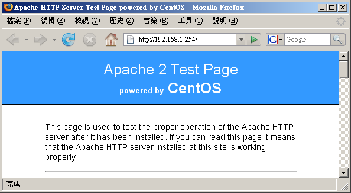
图三、Apache 主网页的测试画面
如果看到这一页，恭喜您，你的 Apache 已经顺利启动了！你可以快快乐乐的开始制作您自己的专属网页！
但如果想要知道有没有成功的驱动 PHP 模块，那你最好先到 /var/www/html 目录下去建立一个简单的档案：
[root@linux ~]# vi /var/www/html/phpinfo.php
<?php
phpinfo();
?>
|
那个『 <?php ... ?> 』是 PHP 模块的网页嵌入式程序语法，在这中间的就是 PHP 的程序代码啦。
那个『 phpinfo() 』是特殊的 PHP 函数，可以显示出目前你 WWW 服务器内 PHP 模块的相关核心数据。
写完之后立刻以浏览器再查阅这个档案看看：
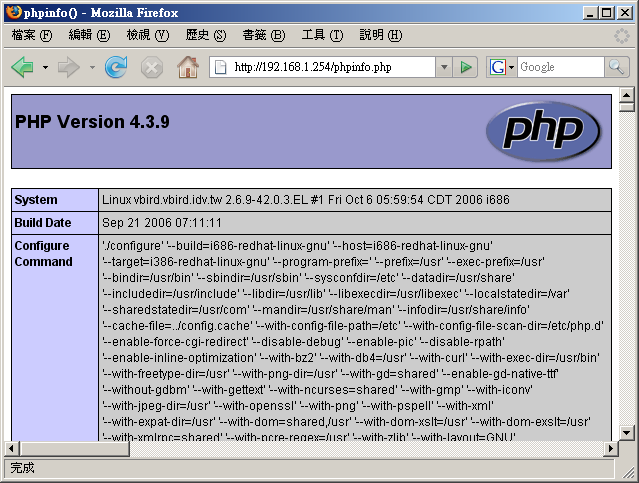
图四、Apache 网页的 PHP 测试画面
注意看网址的部分喔！档名不要写错了！而且这个档案仅是在作为测试之用，事实上内容提供的数据还挺机密的，
所以测试完毕后请将这个档案删除吧！从底下的画面你可以知道 PHP 模块的版本以及 Apache
相关的重要资料啦！自己仔细瞧瞧吧！ ^_^！如此一来，你的 Apache 与 PHP 就 OK 的啦！
那万一测试失败怎么办？常见的错误问题以及解决之道可以参考：
- 网络问题：虽然在本机上没有问题，
但不代表网络一定是通的！请确认一下网络状态！例如 Route table, 拨接情况等等；
- 网页问题：例如鸟哥第一次以 Tarball
安装好之后，竟然发现无法显示主机的首页！后来才发现是主机的首页设定错误！
导致找不到网页，这个时候，请特别留意浏览器上面的显示讯息，里面包含了无法连进来主机的问题！
请提供这样的讯息到讨论区，大家才知道问题出在哪里吶！
- 权限问题：例如你刚刚在 httpd.conf 上面的 user 设定为 apache
了，但偏偏要被浏览的目录权限为 750 ，自然就无法让人家联机进去啦！
- 问题的解决之道：如果还是没有办法连接上来你的 Linux Apache 主机，那么请：
- 察看 /var/log/httpd/error_log 这个档案吧！他应该可以告诉你很多的信息喔！
- 另外，也要仔细的察看一下你的浏览器上面显示的信息，这样才能够知道问题出在哪里！ ^_^
- 另一个可能则是防火墙啦！察看一下 iptables 的讯息！也可能是 SELinux 忘记关！
MySQL
数据库的启动与测试
虽然我们已经启动了基本的 Apache 以及 PHP 模块了，不过，那个重要的数据库尚未启动吧？没错～
在这个小节里面我们就来启动一下 MySQL 吧！在启动 MySQL 前其实系统并没有帮我们建立任何的数据库。
当你初次启动 MySQL 后，系统才会针对数据库进行初始化的建立啊。不相信的话你可以先看看 /var/lib/mysql
这个目录，里面其实没有任何数据的啦。
启动 MySQL (设定 MySQL root
密码与新增 MysQL 用户账号)
首先得要启动 MySQL 才行，启动的方法还是很简单啊！
[root@linux ~]# /etc/init.d/mysqld start
# 如果是初次使用这个指令来启动，你的 /var/lib/mysql 会建立数据库。
[root@linux ~]# netstat -tuln | grep ':3306'
tcp 0 0 0.0.0.0:3306 0.0.0.0:* LISTEN
# 底下在测试看能否以手动的方式连上 MySQL 数据库！
[root@linux ~]# mysql -u root
Welcome to the MySQL monitor. Commands end with ; or \g.
Your MySQL connection id is 2 to server version: 4.1.20
Type 'help;' or '\h' for help. Type '\c' to clear the buffer.
mysql> quit
Bye
|
MySQL 预设监听的埠口在 3306 号，从上面看来我们的 MySQL 似乎是启动了，
不过 刚刚初始化的 MySQL 数据库并没有任何密码，
所以很可能我们的数据库是会被用户搞烂掉的～所以你最好对 MySQL 设定一下密码才好。
另外， 上面那个 root 与我们 Linux 账号的 root 是完全无关的！因为
MySQL 数据库软件也是个多人的操作环境，在该软件内有个管理者恰好账号也是 root 而已。
那么如何针对 MySQL 这个软件内的 root 这个管理者设定他的密码呢？你可以这样做：
[root@linux ~]# mysqladmin -u root password 'your.password'
# 从此以后 MySQL 的 root 账号就需要密码了！如下所示：
[root@linux ~]# mysql -u root -p
Enter password: <==你必须要在这里输入刚刚建立的密码！
Welcome to the MySQL monitor. Commands end with ; or \g.
Your MySQL connection id is 4 to server version: 4.1.20
Type 'help;' or '\h' for help. Type '\c' to clear the buffer.
mysql>quit
|
如此一来 MySQL 数据库会比较安全些啦！其实更好的作法是分别建立不同的用户管理不同的数据库。
举例来说，如果你要给予 dmtsai 这个用户一个 MySQL 的数据库使用权，
假设你要给他的数据库名称为 dmtsai ，那么你可以这样做：
[root@linux ~]# mysql -u root -p
Enter password: <==如前所述，你必须要输入密码嘛！
mysql> create database dmtsai; <==注意每个指令后面都要加上分号 (;)
Query OK, 1 row affected (0.01 sec)
mysql> grant all privileges on dmtsai.* to dmtsai@localhost
identified by 'your.password' ;
Query OK, 0 rows affected (0.00 sec)
mysql> show databases;
+----------+
| Database |
+----------+
| dmtsai | <==看见没？多一个这个数据库啦！
| mysql | <==主要用来记录 MySQL 的账号、主机等等重要信息的主数据库！
| test |
+----------+
3 rows in set (0.00 sec)
mysql> exit
|
然后你可以利用『 mysql -u dmtsai -p 』这个指令来尝试登入 MySQL 试看看，嘿嘿！就知道 dmtsai
这个使用者在 MySQL 里面拥有一个名称为 dmtsai 的数据库啦！其他更多的用法就得请您自行参考
SQL 相关的语法啰！不在本文的讨论范围啦！
由于 MySQL 这个数据库系统如果在很多使用者同时联机时，可能会造成某些效能方面的瓶颈，
不过，我们可以透过简单的设定来进一步处理 MySQL 数据库呢！相关的数据鸟哥是参考这一篇简单的中文说明：
[root@linux ~]# vi /etc/my.cnf
[mysqld]
default-storage-engine=innodb
# 关于目录数据与语系的设定等等；
datadir = /var/lib/mysql
socket = /var/lib/mysql/mysql.sock
default-character-set = utf8 <==每个人的编码都不相同，不要随意跟我一样
port = 3306
skip-locking
# 关于内存的设定，注意，内存的简单计算方式为：
# key_buffer + (sort_buffer + read_buffer ) * max_connection
# 且总量不可高于实际的物理内存量！所以，我底下的数据应该是 OK 的
# 128 + (2+2)*150 = 728MB
key_buffer = 128M
sort_buffer_size = 2M
read_buffer_size = 2M
join_buffer_size = 2M
max_connections = 150
max_connect_errors = 10
read_rnd_buffer_size = 4M
max_allowed_packet = 4M
table_cache = 1024
myisam_sort_buffer_size = 32M
thread_cache = 16
query_cache_size = 16M
tmp_table_size = 64M
# 由联机到确定断线的时间，原本是 28800 (sec) ，约 8 小时，我将他改为 20 分钟！
wait_timeout = 1200
thread_concurrency = 8
old_passwords=1
innodb_data_file_path = ibdata1:10M:autoextend
innodb_buffer_pool_size = 128M
innodb_additional_mem_pool_size = 32M
innodb_thread_concurrency = 16
[mysql.server]
user=mysql
basedir=/var/lib
[mysqld_safe]
err-log=/var/log/mysqld.log
pid-file=/var/run/mysqld/mysqld.pid
|
你要注意的是，因为鸟哥的主机上面假设内存有 2GB 啊！所以跟内存相关的数据才会写很大！
请依照你实际拥有的内存量来处理喔！还得加上你的 Apache 本身的内存用量！
所以.....如果你的网站流量很大的话，在校能测试上面要很注意啊！
如果你不小心忘记 MySQL 的密码怎么办？网络上有一些工具可以让你去处理 MySQL 数据库的挽回。
如果你的数据库内容并不是很重要，删除也无所谓的话 (测试中 @_@)，那么可以将 MySQL 关闭后，
将 /var/lib/mysql 那个目录整个删除掉，然后再重新启动 MySQL ，那么 MySQL 数据库会重建，
你的 root 又没有密码啦！
不过，这个方法仅适合你的数据库并不重要的时候，如果数据库很重要.....
那千万不要随便删除啊！
开始网页设计及安装架站软件，如
phpBB2
基础的 Apache 架设完毕之后，基本上，你就可以开始设计你想要的网站啰！
编写网页的工具很多，请自行寻找吧！不过你必须要知道的是：
- 默认的首页在 /var/www/html/ 目录喔，你应该将所有的 WWW 数据都搬到该目录底下才对！
- 如果首页想要建立在其他地方，你应该要修改 DocumentRoot 那个参数 (httpd.conf)
- 如果你需要安装一些 CGI 程序的话，建议你将他安装到 /var/www/cgi-bin/ 底下，
如此一来你不需要额外设定 httpd.conf 即可顺利启动 CGI 程序；
- 注意你的资料权限！务必要让 Apache 的程序用户 (默认是 apache) 能够浏览！
- 不要将重要数据或者隐私数据放置到 /var/www/html/ 首页内！
- 尽量将你的首页档案档名取为 index.html 或 index.php ！
除了这些基本的项目之外，其实你可以使用因特网上面人家已经做好的 PHP 程序架站机喔！
譬如说讨论区软件 phpBB2 这个玩意儿，完整的架站软件 PHPNuke 以及部落格软件 lifetype 等等。
但这些架站机都需要 PHP 与数据库的支持，所以你必需要将上述介绍的 LAMP 完整的安装好才行。
如果你不喜欢自己写网页的话，那么这些有用的架站软件就够你瞧的啰！鸟哥列出几个连结给你玩一玩先！
不过请注意，这些软件由于是公开的，所以有些怪叔叔可能会据以乱用或乱改，
因此可能会有一些 bug 会出现！因此，你必需要取得最新的版本来玩才行，
而且架设之后还得要持续的观察是否有更新的版本出现，随时去更新到最新版本才行喔！
免得后患无穷～
Apache 服务器的进阶设定
事实上刚刚上头的基本设定已经很足够朋友们架设 WWW 服务器所需了！不过，还有很多可以玩玩的地方，
例如个人用户首页、虚拟主机以及认证保护的网页等等。底下我们分别来谈一谈啰！ ^_^
启动用户的个人网站
(权限是重点)
每一部主机都有一个首页，但是如果每个个人用户都想要有可以自己完全控管的首页时，
那该如何设计？呵呵！Apache 早就帮我们想到了！不过新版的配置文件内常常是默认将这个功能取消的，
所以你必需要自行修订呢！
[root@linux ~]# vi /etc/httpd/conf/httpd.conf
# 找到如下的设定项目，大约在 340 行左右：
<IfModule mod_userdir.c>
UserDir disable
#UserDir public_html
</IfModule>
# 将他改成如下的情况喔！
<IfModule mod_userdir.c>
#UserDir disable
UserDir public_html
</IfModule>
# 重新启动一下先！
[root@linux ~]# /etc/init.d/httpd restart
|
这只是个范例，Apache 默认的个人首页是放置在家目录下的 public_html/ 目录下！假如 dmtsai
的家目录在 /home/dmtsai，那么他的个人首页预设在 /home/dmtsai/public_html/ 啰！你当然可以修改这个目录名称，
只要将上表的 UserDir 内容改掉即可。例如改为 www 时，使用者的个人首页则放在家目录下的 www 目录中。
设定完毕后得要重新启动你的 apache 喔！
例题：
如何让未来所有『新增』的用户默认家目录下都有个 www 的目录？
答：
因为新增用户时所参考的家目录在 /etc/skel 目录内，所以你可以直接 mkdir /etc/skel/www 即可。
|
好了，假设你的主机有个 dmtsai 的用户，那么这家伙怎么建立他的个人首页？
我们这样测试一下好了！(底下的工作请以你的一般身份使用者处理)：
[dmtsai@linux ~]$ cd ~
[dmtsai@linux ~]$ mkdir public_html
[dmtsai@linux ~]$ chmod 755 public_html
[dmtsai@linux ~]$ chmod 755 ~
[dmtsai@linux ~]$ cd public_html
[dmtsai@linux public_html]$ echo "Test your home" >> index.html
|
由于 CentOS 默认的用户家目录权限是 drwx------ ，这个权限将无法让 Apache 的程序浏览啊！
所以你至少要让你的家目录与 public_html 目录的权限成为 drwxr-xr-x 才行！这个很重要啊！
那么未来只要你在浏览器的网址列这样输入：
就可以看到你的使用者个人网页啰！之后让使用者自己去设计他的网站吧！
现在你知道那个毛毛虫 (~) 的意义了吧？ ^_^！不过，多这个毛毛虫就很讨厌～
我可不可以将使用者的个人网站设定成为：
是可以啦！最简单的方法是这样的：
[root@linux ~]# cd /var/www/html
[root@linux html]# ln -s /home/dmtsai/public_html dmtsai
|
由于我们首页的『 Options 』内有 FollowSymLinks 这个参数的原因，所以可以直接使用连结档即可。
另外我们也可以使用 Apache 提供的别名功能 (Alias)，例如这样做：
[root@linux ~]# vi /etc/httpd/conf/httpd.conf
# 找个不与人家设定值有干扰的地方加入这个设定项目：
Alias /dmtsai/ "/home/dmtsai/public_html/"
<Directory "/home/dmtsai/public_html">
Options FollowSymLinks
AllowOverride None
Order allow,deny
Allow from all
</Directory>
[root@linux ~]# apachectl restart
|
这样就 OK 的啦！ ^_^
启动某个目录的 CGI (perl)
程序执行权限
在前几个小节里面我们有谈到如果你想要 Apache 可以执行 perl 之类的网页程序时，
你就得需要 安装一些额外的模块才行。其中 mod_perl 与 mod_python
这两个套件建议您最好安装一下啦！然后我们也提到想要执行 CGI 程序就得到 /var/www/cgi-bin/
目录下去执行。如果你想要在其他目录底下执行 CGI 是否可以？当然行啊！
利用新目录下的 Options 参数设定：
假设想要执行 CGI 的程序附文件名为 .cgi 或 .pl ，且放置的目录在 /var/www/html/cgi/ 时，
你可以这样做：
[root@linux ~]# vi /etc/httpd/conf/httpd.conf
# 找到底下这一行，大约在 807 行左右啦：
#AddHandler cgi-script .cgi
# 将他改成底下的模样，让附档名为 .pl 的档案也能执行喔！
AddHandler cgi-script .cgi .pl
# 然后加入底下这几行来决定开放某个目录的 CGI 执行权限。
<Directory "/var/www/html/cgi">
Options ExecCGI
AllowOverride None
Order allow,deny
Allow from all
</Directory>
[root@linux ~]# apachectl restart
|
接下来只要让你的 CGI 程序具有 x 权限，那么他就可以执行啦！举例来说，你的档案在 /var/www/html/cgi/index.cgi
的话，那么：
[root@linux ~]# chmod a+x /var/www/html/cgi/index.cgi
|
然后在网址列输入：http://主机名或 IP/cgi/index.cgi 即可执行该档案啦！
你可以直接利用档名的别名来处理！更简单呢：
[root@linux ~]# vi /etc/httpd/conf/httpd.conf
# 同样的你要先确认这一行是存在的！
AddHandler cgi-script .cgi .pl
# 然后加入底下这几行来决定开放某个目录的 CGI 执行权限。
ScriptAlias /cgi/ "/var/www/html/cgi/"
[root@linux ~]# apachectl restart
|
这个方法比较棒啦！因为该目录不需要在 Apache 首页底下也可以成功的啦！
这两个方法你可以随意取一个来处理即可！不需要两个都进行啦！
找不到网页时的显示讯息通知
如果你的 /var/www/html/cgi 目录底下没有任何首页档案 (index.???) 时，那当使用者在网址列输入『
http://your.hostname/cgi 』，请问结果会显示出什么呢？可能有两个：
- 如果你的 Options 里面有设定 Indexes 的话，那么该目录下的所有档案都会被列出来，提供类似 FTP
的连结页面。
- 如果没有指定 Indexes 的话，那么错误讯息通知就会被显示出来。
事实上 CentOS 所提供的 Apache 已经规范好一些简单的错误资料网页了，你可以到 /var/www/error/
目录下瞧瞧就晓得。不过该目录下的档案并没有中文讯息，所以.....真要命！至于 Apache 的错误讯息设定在这里：
[root@linux ~]# vi /etc/httpd/conf/httpd.conf
# 大约在 886 行左右，预设就是批注掉的！
# ErrorDocument 403 /error/HTTP_FORBIDDEN.html.var
# ErrorDocument 404 /error/HTTP_NOT_FOUND.html.var
# ErrorDocument 405 /error/HTTP_METHOD_NOT_ALLOWED.html.var
# ErrorDocument 408 /error/HTTP_REQUEST_TIME_OUT.html.var
....后面省略....
|
虽然 Apache 有提供这些数据了，不过 CentOS 默认是将那些资料批注掉的！因为我们使用中文语系，
该数据并没有中文信息，所以批注掉反而对我们的处理有帮助呢！ ^_^
由于你的网站可能会因为一些档名的变更或者是重新编写的原因，因此旧的网页档名就不存在。
但客户端可能保留的还是旧的连结，此时我们就得要很好心的告知使用者该网页找不到的原因才好。
你可以这样做：
[root@linux ~]# vi /etc/httpd/conf/httpd.conf
# 找到底下这一段，看看这些简单的范例先：
#ErrorDocument 500 "The server made a boo boo."
#ErrorDocument 404 /missing.html
#ErrorDocument 404 "/cgi-bin/missing_handler.pl"
#ErrorDocument 402 http://www.example.com/subscription_info.html
# 假设未来提供用户相关信息的地方为 missing.html 这个档案，所以你应该要：
ErrorDocument 404 /missing.html
[root@linux ~]# apachectl restart
|
上面那个档案 /missing.html 必需要放置在你的首页目录下，亦即是 /var/www/html/missing.html 啦！
要提醒你的是：『 你的所有配置文件当中 (包括 /etc/httpd/conf.d/*.conf)
只能存在一个 ErrorDocument 404 ... 的设定值，否则将以较晚出现的设定为主』
所以你得先搜寻一下，尤其是很多 Linux 版本的 Apache 并没有将默认的错误讯息批注呢。
至于那个 404 是啥意思？他的意义是这样的：
- 100-199：一些基本的讯息
- 200-299：客户端的要求已成功的达成
- 300-399：Client 的需求需要其他额外的动作，例如 redirected 等等
- 400-499：Client 的要求没有办法完成(例如找不到网页)
- 500-599：主机的设定错误问题
好了，接下来让我们编辑一下那个 missing.html 的档案吧！ ^_^
[root@linux ~]# vi /var/www/html/missing.html
<html>
<head>
<meta http-equiv="Content-Type" content="text/html; charset=big5">
<title>错误讯息通知</title>
<head>
<body>
<font size=+2 face="标楷体">您输入的网页找不到！</font><br />
<hr />
亲爱的网友，您所输入的网址并不存在我们的服务器当中，
有可能是因为该网页已经被管理原删除，
或者是您输入了错误的网址。请再次查明后在填入网址啰！
感谢您常常来玩！ ^_^<br />
<hr />
若有任何问题，欢迎联络管理员<a
href="mailto:root@localhost">root@localhost</a>。
</body>
</html>
|
现在你如果在网址列随便输入一个主机上不存在的网址，就会出现如下的画面啰：
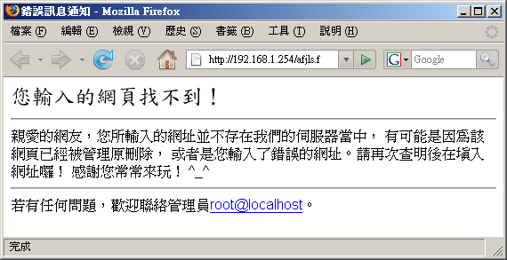
图五、错误讯息的通知显示网页
当然啦，您可以自行设定出符合你网页风格的数据啦！例如鸟哥的网站上面就列出一些基本的连结，
帮助网友们可以顺利的取得他们想要的数据啊！这也是很重要的功能呢！^_^
浏览权限的设定动作
(order, limit)
咱们的 Apache 配置文件内就可以指定限制浏览来源的动作了！我们可以针对来源 IP 或网域来限制呢！
就以 Order 这个限制配合 Allow 及 Deny 来处理即可。再次的强调一下：
- Order deny,allow：以 deny 优先处理，但没有写入规则的则默认为 allow
。常用于：拒绝所有，开放特定的条件；
- Order allow,deny：以 allow 为优先处理，但没有写入规则的则默认为 deny。
常用于：开放所有，拒绝特定的条件。
- 如果 allow 与 deny 的规则当中有重复的，则以预设的情况 (Order 的规范) 为主。
举例来说，如果我们的首页想要让 192.168.1.11 及政府部门无法联机，其他的则可以联机，
由上面的说明你可以知道是开放所有拒绝特定的条件，所以你可以这样做设定：
[root@linux ~]# vi /etc/httpd/conf/httpd.conf
<Directory "/var/www/html">
Options FollowSymLinks
AllowOverride None
Order allow,deny
allow from all
deny from 192.168.1.11
deny from .gov.tw
</Directory>
|
注意一下，因为 Order 是『 allow,deny 』，所以所有规则当中属于 allow 的都会被优先提到最上方，
为了避免这个设计上的困扰，所以建议你直接将 allow 的规则写在最上方。
而由于规则当中 192.168.1.11 隶属于 all 当中 (all 代表所有的嘛！)，因此这个设定项目则为默认值，
亦即为 deny 啦！那个 .gov.tw 的设定项目也一样。如果是底下的模样：
[root@linux ~]# vi /etc/httpd/conf/httpd.conf
# 底下可是个错误的示范，请仔细看下个段落的详细说明喔！
<Directory "/var/www/html">
Options FollowSymLinks
AllowOverride None
Order deny,allow
deny from 192.168.1.11
deny from .gov.tw
allow from all
</Directory>
|
虽然 deny 会先挪到上方来处理，不过因为 192.168.1.11 是在 all 的范围内，所以发生重复，
因此这个设定值将会以预设的 allow 为主，因此就无法限制住这个 192.168.1.11 的存取啦！
这边很容易搞错的吶！鸟哥也是常常搞到头昏脑胀的～
例题：
如果有个应该要保护的内部目录，假设在 /var/www/html/lan/ ，
我仅要让 192.168.1.0/24 这个网域可以浏览的话，那么你应该要如何设定的好？
答：
这个案例当中有点像是『拒绝所有联机，仅接受特定联机』的样子，因此可以使用 deny,allow 那个情况，
所以你可以这样做： <Directory "/var/www/html/lan">
Options FollowSymLinks
AllowOverride None
Order deny,allow
deny from all
allow from 192.168.1.0/24
</Directory>
|
事实上，如果想要让某个网域或者是 IP 无法浏览的话，最好还是利用 iptables 来处理比较妥当。
不过如果仅是某些重要目录不想让人家来查阅的话，那么这个 allow, deny 与 order
的设定数据可就很值得参考了。
而除了这个 order 设定值之外，我们还有个限制客户端能进行的动作的设定喔！
那就是 Limit 这个设定啦！举例来说，如果我们想要让使用者在 /var/www/html/lan
这个目录下仅能进行最阳春的 GET, POST, OPTIONS 的功能，除了这几个之外的其他功能通通不允许，
那么你可以这样做：
[root@linux ~]# vi /etc/httpd/conf/httpd.conf
<Directory "/var/www/html/lan">
AllowOverride none
Options FllowSymLinks
# 先允许能够进行 GET, POST 与 OPTIONS 啦！
<Limit GET POST OPTIONS>
Order allow,deny
Allow from all
</Limit>
# 再规定除了这三个动作之外，其他的动作通通不允许啦！
<LimitExcept GET POST OPTIONS>
Order deny,allow
Deny from all
</LimitExcept>
</Directory>
|
透过 Limit 与 LimitExcept 就能够处理客户端能够进行的动作啦！也就有办法针对你的数据进行细部保护啰。
不过这些保护真的很细部，一般小网站大致上用不到 Limit 这个玩意儿说。
主机状态说明网页
既然已经安装好了 WWW 主机，除了提供服务之外，重要的是要如何维护啰！嘿嘿！
那么是否一定要额外安装其他的套件才能知道目前的主机状态呢？当然不需要啦！我们可以透过 Apache
提供的特别功能来查询主机目前的状态！那就是 mod_status 这个模块啰！
这个模块默认是关闭的，你必须要修改配置文件来启动他才行。
[root@linux ~]# vi /etc/httpd/conf/httpd.conf
# 先确定底下这几个项目真的有存在才行！
LoadModule status_module modules/mod_status.so <==大约在 166 行，就是模块的加载
ExtendedStatus On <==大约在 201 行，你可以将他打开，信息会比较多！
# 底下的数据则大约在 934 行左右，你可以将他修改成为这样：
<Location /server-status>
SetHandler server-status
Order deny,allow
Deny from all
Allow from 192.168.1.0/24
Allow from 127.0.0.1
</Location>
[root@linux ~]# apachectl restart
|
接下来你只要在你的网址列输入主机名后面加上 http://hostname/server-status 即可发现如下的模样：
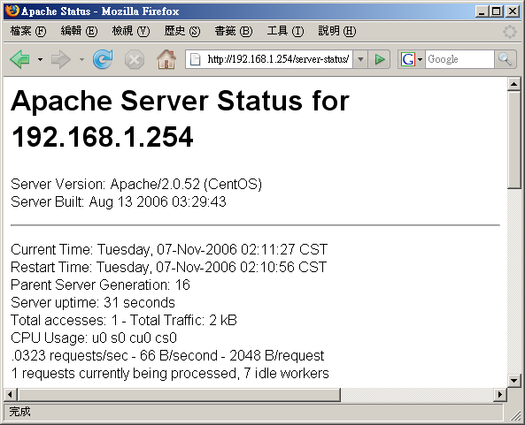
图六、主机的目前状况回报网页
输出的结果包括目前的时间以及 Apache 重新启动的时间，还有目前已经启动的程序等等，
还有网页最下方会显示每个程序的客户端与服务器端的联机状态。虽然显示的状况挺阳春，不过该有的也都有了，
可以让你约略了解一下主机的状况啰。要注意喔，可查阅者 (allow from 的参数)
还是需要限制的比较严格一点啦！
.htaccess
与认证网页设定
对于保护 Apache 本身的数据方面，除了上述的 Order 以及 Limit 之外，还有什么方式呢？
因为 Order 与 Limit 主要是针对 IP 网域或者是主机名来管理，那如果我们客户端是使用拨接方式取得 IP ，
那么 IP 会一直变动的，如此一来那个保护的目录用户也就不能在任何地方进入了，会造成一些困扰。
此时如果能够使用密码保护的方式，让用户可以输入账号/密码即可取得浏览的权限的话，
那客户端就不用受到那个 order 的 Allow, deny 的限制啦！真好～
呵呵！Apache 确实刚好有提供一个简单的认证功能，让我们可以轻松愉快的就设定好保护的网页呢！
Tips:
什么是受保护的数据呢？举例来说，学校老师们可能会提供一些教学教材或者是习题给同学，
这些数据不想给所有人取得，那么就可以将这些数据放在特定的受保护的目录中。还有例如某些重要的 Apache
主机分析的数据 (本章后面提及的一些分析工具)，这些数据建置的方法需要启用 CGI 程序，
而 CGI 程序的执行是有风险的，而且那些分析所得的数据也很重要。
此时，该程序与输出结果就需要放在受保护的目录啦！
|  |
那么那个认证网页如何搞定？简单的说，他要这样处理：
- 建立受保护的目录：既然我们是『按了某个链接进入某个目录之后，才会出现对话窗口』，
那么首先当然就是要有那个设定为认证网页的『目录』啰！请注意，是要目录才行喔！
- 设定 Apache 所需参数：然后，在对话窗口中，既然我们需要输入 ID 与密码，那么自然就需要密码文件啰！
另外，虽然 Apache 有支持 LDAP 及 MySQL 等等的认证机制，不过我们这里并不讨论其他的认证机制，
完全使用 Apache 的默认功能而已，所以，底下我们会使用基本 (Basic) 的认证模式喔！
- 建立密码档案：处理完基本的设定后，再来则是建立登入时所需要的账号与密码！
- 最后，重新启动 Apache 就 OK 啦！
其中，第二个步骤会比较有趣，我们说过，任何的设定资料都可以直接写到 httpd.conf 这个配置文件当中，
所以设定保护目录的参数数据确实可以写入 httpd.conf 当中。不过，想一想，如果你的 Apache 主机有 30
个使用者具有个人首页，然后他们都需要制作保护目录，那个 httpd.conf 只有身为 root 的你才能够修改，
更可怕的是『每次改完都需要重新启动 Apache』～请问，你的时间精力是否会受到『很严厉的考验？』
所以啦，如果我们能够透过外部的档案来取代设定 httpd.conf 内的参数，那么是否会比较好？
而且最好能够该档案设定即生效，不需要重新启动 Apache 的话，那就更好啦！因为如此一来，
你就可以交给使用者自行管理他们的认证网页啰！呵呵～
透过 httpd.conf 内的 AllowOverride 参数，配合 .htaccess 这个档案的设定就 OK 搞定！
这个设定项目与配置文件 httpd.conf 的关系可以这样看：
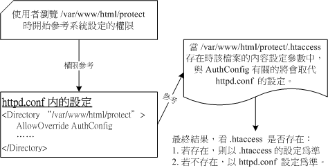
图七、.htaccess 与主要配置文件 httpd.conf 的相关性
也就是说：
- 你必需要在 httpd.conf 这个主配置文件当中先以 AllowOverride 指定某个目录下的 .htaccess
能够进行取代的参数为何？一般有 AuthConfig, Options 等等，考虑到系统数据的安全，建议提供 AuthConfig
的项目就好了。设定完毕后请重新启动 Apache。
- 在该目录底下务必要存在 .htaccess 这个档案，透过这个档案即可修改 httpd.conf 内的设定啊！
- .htaccess 设定完『立刻生效』，不需要重新启动 Apache ，因为该档案的内容是『当有客户端浏览到该目录时，
该档案才会被使用来取代原有的设定。
既然 .htaccess 的用途比较广，所以底下我们不介绍 httpd.conf 的认证参数了，
请您自行测试测试即可。底下主要以 .htaccess 档案的设定为主喔！赶紧来看看吧！
1. 建立保护目录的数据
假设我要将受保护的数据放置到 /var/www/html/protect 当中，记得，这个目录要让 Apache 可以浏览到才行。
所以你可以立刻将一些重要的数据给他搬一到这里来。我们先这样测试一下吧！建立个简单的测试网页即可。
[root@linux ~]# mkdir /var/www/html/protect
[root@linux ~]# vi /var/www/html/protect/index.html
<html>
<head><title>这是个测试网页啊！</title></head>
<body>看到这个画面了吗？如果看到的话，表示你可以顺利进入本受保护网页啦！
</body></html>
|
这个动作是仅有 root 能作的啦！你要开始编辑 httpd.conf ，让受保护的那个目录可以使用 .htaccess 啊！
[root@linux ~]# vi /etc/httpd/conf/httpd.conf
# 确定底下这几行是存在的！
AccessFileName .htaccess
<Files ~ "^\.ht">
Order allow,deny
Deny from all
</Files>
# 在某个不受影响的地方加入这一段：
<Directory "/var/www/html/protect">
AllowOverride AuthConfig
Order allow,deny
Allow from all
</Directory>
[root@linux ~]# apachectl restart <==重新启动，不要忘记了！
|
这样就设定妥当了，很简单吧！再接下来要准备 .htaccess 的建立了。
要注意，这个档案是在保护目录底下喔！不要放错地方啦！所以你要这样做：
[root@linux ~]# cd /var/www/html/protect
[root@linux ~]# vi .htaccess
# 只要加入底下这几行即可
AuthName "Protect test by .htaccess"
Authtype Basic
AuthUserFile /var/www/apache.passwd
require user test
|
这些参数的意义是这样的：
- AuthName：在出现要你输入账号与密码的对话窗口中，出现的『提示字符』就是了；
- AuthType：认证的类型，我们这里仅列出 Apache 预设的类型，亦即是『basic』的啦
- AuthUserFile：这个保护目录所使用的账号密码配置文件。
也就是说，这个档案是随便你设定的，当然啦，所以使用者当然可以自行设定账号与密码啰。
档案内的账号不限在 /etc/passwd 出现的使用者！另外，这个档案不要放置在
Apache 可以浏览的目录内，所以我将他放置在首页之外！避免被不小心窃取。
- require：后面接可以使用的账号。假如 /var/www/apache.passwd 内有三个账号，
分别是 test, test1, test2 ，那我这里只写了 test ，因此 test1, test2 将无法登入此目录。
如果要让该密码文件内的用户都能够登入，就改成『require
valid-user』即可啊！
设定好就立刻生效了，不需要重新启动任何东西啊！
Apache 默认读取的账号/密码设定数据是由 htpasswd 所建立的，这个指令的语法是这样的：
[root@linux ~]# htpasswd [-c] 密码文件文件名 用户账号
参数：
-c ：建立后面的密码档案。如果该档案已经存在，则原本的数据会被删除！
所以如果只是要新增使用者(档案已存在时)，不必加上 -c 的参数！
1. 建立 apache.passwd ，账号为 test
[root@linux ~]# htpasswd -c /var/www/apache.passwd test
New password: <==这里输入一次密码，注意，屏幕不会有任何讯息。
Re-type new password: <==这里再输入一次
Adding password for user test
[root@linux ~]# cat /var/www/apache.passwd
test:FIquw/..iS4yo <==您瞧瞧！已经建立一个新使用者！
2. 在已存在的 apache.passwd 内增加 test1 这个账号：
[root@linux ~]# htpasswd /var/www/apache.passwd test1
|
再次强调，这个档案档名需要与 .htaccess 内的 AuthUserFile 相同，且不要放在浏览器可以浏览到的目录！
这样就算设定完毕啦！你可以使用浏览器在网址列输入：『http://your.hostname/protect』试看看，结果会如何？
最后测试的结果会像底下这个样子：
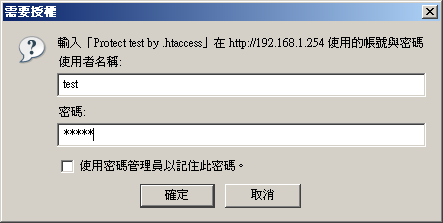
图八、受保护模式的授权画面
如果你曾经浏览过这个目录了，当时可能尚未制作保护的档案，或者是档案设计错误，导致你曾经可以浏览该网页，
则该网页会被你的浏览器快取 (cache) 起来，所以可登入的画面会一再地出现而不会跑出需要认证的对话窗口。
此时你应该要：
- 务必将全部的浏览器都关闭，再重新启动浏览器。因为你成功的登入该目录后，
该登入的信息会快取在这次的联机上喔！
- 可以将浏览器上头的『reload (重新读取)』按下去，让浏览器重新读取一次；
否则快取不会更新。
- 可以将浏览器的快取数据全部清除，关闭浏览器后再重新启动浏览器看看。
如果还是一直出问题，那就只好前往登录档 (/var/log/httpd/error_log) 察看错误信息啰。
常见的错误只是打错字啦！@_@
虚拟主机的设定
接下来我们要谈的是『主机代管』......瞎密？不是啦～是一个称为虚拟主机的东西啦～
这东西很有用喔！他可以让你的一部 Apache 看起来像有多个『主站首页』的感觉啦！
什么是虚拟主机 (Virtual Host)
所谓的虚拟主机，基本上就是『 让你的一部主机上面，有好多个 "主网页"
存在，也就是说，硬件实际上只有一部主机，但是由网站网址上来看，则似乎有多部主机存在的样子！』。
举个例子来说好了，鸟哥提供的网站主要有主要学习网站以及新手讨论区，分别在底下的连结：
这两个连结你给他点下去，会发现其实是不同的资料内容，不过，如果你用 dig
之类的软件来查验 IP 的话，会发现这两个网址都指向同一个 IP ㄟ！怎么会这样？没错啊！这就是虚拟主机的主要功能！
他 可以让你的多个主机名对应到不同的主网页目录 (DocumentRoot 参数)，
所以看起来会像有多部实际主机的模样啦！这样说，了解虚拟主机了吗？
那么要架设虚拟主机需要什么咚咚呢？以刚刚鸟哥的网站的结果为例，我必需要有多个主机名对应到同一个 IP 去，
所以说，你必需先拥有多个主机名才行。要如何拥有多个主机名？那就是：
- 向 ISP 申请多个合法的主机名，而不自己架设 DNS；
- 自行设定经过合法授权的 DNS 主机来设定自己所需要的主机名。
相关的 DNS 申请与设定技巧我们在前几章都谈过了，您可得自行去瞧瞧先！
我们在 DNS 章节里面不是有设定了多个主机名吗？
那些主机名就是为了要在这里实作用的啦！ ^_^！你得要注意的是，我的每个主机名都必需要对应到某个主网页目录，
底下则是鸟哥的一个简单范例：
| 主机名 | 对应的主目录 |
| linux.vbird.tsai | /var/www/html |
| www.vbird.tsai | /var/www/www |
| phorum.vbird.tsai | /var/www/phorum |
接下来就是开始设定啰！要告诉你的是，建议你将虚拟主机的设定建立一个新的档案在
/etc/httpd/conf.d/*.conf 当中，因为如此一来你的虚拟主机配置文件就可以进行搬移，
修改的时候也不会影响到原有的 httpd.conf 的资料！而因为 httpd.conf 内有个
Include 的参数将 /etc/httpd/conf.d/*.conf 的档案都读入配置文件当中，所以设定上面就变的很轻便，
备份与升级的时候也比较容易处理嘛！不啰唆，赶紧来实验一下先！
1. 先建立所需要的目录：
[root@linux ~]# mkdir /var/www/www
[root@linux ~]# mkdir /var/www/phorum
[root@linux ~]# echo "www.vbird.tsai" > /var/www/www/index.html
[root@linux ~]# echo "phorum.vbird.tsai" > /var/www/phorum/index.html
# 原有的首页 (/var/www/html) 就不更动了！另建两个不同的首页内容，可供测试用。
2. 开始编辑配置文件，这里鸟哥用额外的档案来设定喔！
[root@linux ~]# vi /etc/httpd/conf.d/virtual.conf
# 底下这一行在规定『本机任何接口的 port 80 所指定的虚拟主机』的意思。
NameVirtualHost *:80
# 先针对两个多出来的可浏览目录进行权限方面的规范啊！
<Directory "/var/www/www">
Options FollowSymLinks
AllowOverride None
Order allow,deny
Allow from all
</Directory>
<Directory "/var/www/phorum">
Options FollowSymLinks
AllowOverride None
Order allow,deny
Allow from all
</Directory>
# 针对三部主机的 DocumentRoot 进行定！
<VirtualHost *:80>
ServerName linux.vbird.tsai
DocumentRoot /var/www/html
</VirtualHost>
<VirtualHost *:80>
ServerName www.vbird.tsai
DocumentRoot /var/www/www
CustomLog /var/log/httpd/www.access_log combined
# 不同的主页可以指定不同的登录文件信息，这样比较好 debug 与分析啦！
</VirtualHost>
<VirtualHost *:80>
ServerName phorum.vbird.tsai
DocumentRoot /var/www/phorum
</VirtualHost>
[root@linux ~]# apachectl restart
|
你要注意的只有几点：
- 在虚拟主机的设定上还有很多的可用的功能，不过，最低的限度是需要有 ServerName 及 DocumentRoot 这两个即可！
- 使用了虚拟主机后，原本的主机名 (linux.vbird.tsai) 也要同时写入虚拟主机的对应中，
否则这个主机名可能会不知道被丢到哪里去喔！
- 在 www.vbird.tsai 这个主机当中多了个 CustomLog ，表示任何向 www.vbird.tsai 要求数据的记录都会改写入
/var/log/httpd/www.access_log 而不是预设的 /var/log/httpd/access_log。
但这个新增的登录档必需要加入 logrotate 的管理当中才行喔！否则登录档会大到『爆表』
接下来，只要你客户端的浏览器可以找到这三个主机名并联机到正确的 IP 去，
你这个 Apache 就可以同时提供三个网站的站址了，很方便吧！^_^。
虚拟主机为什么会这么热门啊？这是因为他可以进行底下的任务：
- 主机代管：
如果你有一部很快速的计算机，配合你的网络带宽又大的话，那么你可以用这个虚拟主机的技术来『拉客』喔！
因为毕竟不是所有公司都有维护服务器的能力，如果你能够提供合理的流量、亲和的数据传输接口、
稳定的提供服务，并且给予类似 MySQL 数据库的支持，那么当然有可能进行『主机代管』的业务啊！
您说是吧！ ^_^
- 服务器数据备援系统：
你可以在两个地方放置两部主机，主机内的网页数据是一模一样的 (这个可以使用
rsync 来达成的) ，那么你将可以利用 Apache 的虚拟主机功能，
配合 DNS 的 IP 指向设定，让某一部主机挂点时，另外一部主机立刻接管 WWW 的要求！
让你的 WWW 服务器不会有任何断线的危机啊！ ^_^ (注：当 A 服务器挂点时，
赶紧设定 DNS ，让原本 A 的 IP 指定给 B，则任何向该 IP 要求的 WWW 将会被导向 B，
B 有 A 的备份数据以及虚拟主机设定，搞定！)
- 将自己的资料分门别类：
如果野心没有这么大的话，那么如果你有几个不同的数据类型时，也可以利用虚拟主机将各种数据分门别类啦！
例如将部落格指向 blog.vbird.tsai ，将讨论区指向 phorum.vbird.tsai ，将教学数据指向
teach.vbird.tsai 等等，这样的网址就很容易让客户端了解啦！您说是吧！ ^_^
防火墙与 SELinux
一句老话啦！就是『 如果你的 Server 不能动，但是确定设定都没有问题，
那么除了持续查询 log file 之外，最大的可能就是防火墙挡住了！』
这句话应该没有什么太大的疑问才对～所以呢，万一你的
Apache 不能动，那么请看看你的防火墙设定规则吧！因为防火墙我们已经提过了，请参考『 简易防火墙设定』一文，这里不再赘述！
另外，Apache 由于太出名了，很多人有在使用这一套东西，所以可能发布的漏洞也不少。
因此，你应该要保持随时更新这套系统在最新的版本上才好！最好是要使用 yum 来自动在线更新啦！
最后，如果你没有针对 SELinux 彻头彻尾的设定 Apache 能够读取的文件系统的话，
理论上，你的 Apache 应该是无法提供正确的浏览的。
所以啰，请先将 SELinux 关闭啦！不然的话，花个几个月好好的研究一下 SELinux 吧！ ^_^
登录文件分析以及 PHP 强化模块等套件说明
除了这些基本的 Apache 使用方式之外，我们还有哪些事情可以玩的？
当然还有很多啦！包括有趣的 PHP 效能强化模块、登录文件分析以了解整个 Apache 的使用情况等等！
让我们来瞧一瞧！
PHP 强化模块 (eaccelerator) 与
Apache 简易效能测试
虽然 PHP 网页程序标榜的是速度快速，不过因为 PHP 毕竟是先将一些可用函数先编译成为模块，
然后当网页使用到该 PHP 程序的时候，再由呼叫 PHP 模块来达成程序所需要的行为。
由于多了一道手续，所以他的执行效能还是有别于传统编译的程序语言啰。
那么如果我们可以将 PHP 程序预先转换成为可直接执行的 binary file ，那么不就可以直接读取进而加快速度吗？
没错！是这样～这东西称为预编器～其中有一套软件称为 eaccelerator ，eaccelerator 可以将您的 PHP
程序与 PHP 核心及相关函式库预先编译后暂存下来，以提供未来使用时可以直接执行，加上他可以优化您的
PHP 程序，因此，可以让您的 PHP 网页速度增快不少喔！ eaccelerator 的官方网站在底下：
整个安装的流程很简单啦！你先将这个软件的原始码下载下来，我这里假设你将他下载到 /root 目录下，
另外你必需要确定你有安装 php-devel, autoconf, automake, m4, libtool 等套件才行！
那就赶紧来安装吧！ (鸟哥是以 0.9.5 这一版为范例的喔！)
1. 解压缩文件案：
[root@linux ~]# cd /usr/local/src
[root@linux src]# tar -jxvf /root/eaccelerator-0.9.5.tar.bz2
[root@linux src]# cd eaccelerator-0.9.5/
2. 利用 phpize 进行 PHP 程序的预处理
[root@linux eaccelerator-0.9.5]# phpize
# 过程会出现一些警告信息，不要理他没关系！
[root@linux eaccelerator-0.9.5]# ./configure --enable-eaccelerator=shared \
> --with-php-config=/usr/bin/php-config
[root@linux eaccelerator-0.9.5]# make
3. 将他整个安装起来！
[root@linux eaccelerator-0.9.5]# make install
# 此时这个新编译的模块会被放置到 /usr/lib/php4/eaccelerator.so 当中啊！
|
将模块处理完毕之后接下来就是要让 PHP 使用这个模块啦！如何进行呢？
1. 预先加载这个 PHP 的模块：
[root@linux ~]# vi /etc/ld.so.conf
# 新增加这一行即可！
/usr/lib/php4
[root@linux ~]# ldconfig
# 关于 ld.so.conf 以及 ldconfig 我们在基础篇谈过了，请自行参考喔！
2. 修改 php.ini 喔！
[root@linux ~]# vi /etc/php.ini
# 在这个档案的最底下加入这几行：
;;;;;;;;;;;;;;;;;;;;;;;;;;;;;;;;;;
; http://eaccelerator.net/HomeUk ;
; 2006/11/08 VBird ;
;;;;;;;;;;;;;;;;;;;;;;;;;;;;;;;;;;
extension="eaccelerator.so"
eaccelerator.shm_size="16"
eaccelerator.cache_dir="/tmp/eaccelerator"
eaccelerator.enable="1"
eaccelerator.optimizer="1"
eaccelerator.check_mtime="1"
eaccelerator.debug="0"
eaccelerator.filter=""
eaccelerator.shm_max="0"
eaccelerator.shm_ttl="0"
eaccelerator.shm_prune_period="0"
eaccelerator.shm_only="0"
eaccelerator.compress="1"
eaccelerator.compress_level="9"
3. 建立 eaccelerator 的暂存数据，重点在于权限要设定正确！
[root@linux ~]# mkdir /tmp/eaccelerator
[root@linux ~]# chmod 777 /tmp/eaccelerator
[root@linux ~]# apachectl restart
|
基本上这样就设定妥当啦！要注意的是：『 因为你的 eaccelerator
是根据目前这一版的 PHP 核心所编译出来的，所以未来如果你的 Linux distribution 有释出新版的
PHP 时，你也顺利更新到新版的 PHP 了，那你的这个 eaccelerator 就必需要自行手动再更新一次，
以配合到正确的 PHP 版本，否则这个模块将不会正确运作。』！很重要喔！
那如何确认这个模块有正确的在运作呢？你可以利用我们在启动 PHP 那个小节内谈到的 phpinfo()
这个函式来查阅，透过浏览器你应该会看到如下的画面：
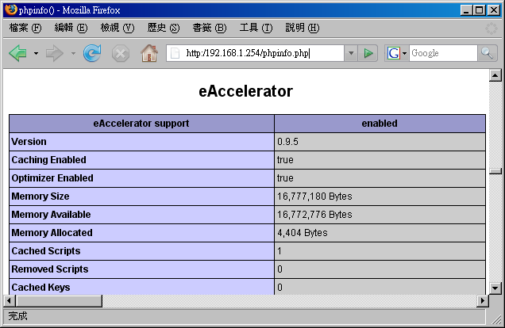
图九、确定 eaccelerator 有运作的画面
如果你的 eaccelerator 没有启动的话，那就看不到图九的画面啦！藉由这个动作来测试测试吧！ ^_^！
接下来我们利用 Apache 提供的一个小程序来测试一下我们网站的效能吧！这个程序叫做 ab ，
他可以主动的向主机重复要求多笔数据来确认主机的效能喔！
[root@linux ~]# ab [-dSk] [-c number] [-n number] 网页档名
参数：
-d ：不要显示 saved table 的百分比资料；通常不要那个数据，所以会加 -d
-k ：还记得上面的 KeepAlive 吧！加入 -k 才会以这样的功能测试；
-S ：不显示长讯息，仅显示类似 min/avg/max 的简短易懂讯息！
-c ：同时有多少个『同时联机』的设定(可想成同时联机的 IP )
-n ：同一个联机建立几个要求通道！(可想成同一个 IP 要求的几条联机)
更多的讯息请自行 man ab 喔！
# 针对我们刚刚测试时的 phpinfo.php 这个档案来测试！
[root@linux ~]# ab -dSk -c100 -n100 http://localhost/phpinfo.php
This is ApacheBench, Version 2.0.41-dev <$Revision: 1.141 $> apache-2.0
Copyright (c) 1996 Adam Twiss, Zeus Technology Ltd, http://www.zeustech.net/
Copyright (c) 1998-2002 The Apache Software Foundation, http://www.apache.org/
....中间省略....
Total transferred: 4549407 bytes
HTML transferred: 4532922 bytes
Requests per second: 125.21 [#/sec] (mean)
Time per request: 798.628 [ms] (mean)
Time per request: 7.986 [ms] (mean, across all concurrent requests)
Transfer rate: 5562.04 [Kbytes/sec] received
....底下省略....
|
根据这个软件的输出你会知道每秒钟的传输速率、最大传输速度等等，可以约略知道一下基本效能啦！
不过鸟哥这个程序是在自己机器上面测试的，速度快是正常的！你可以在网络的另一头来测试一下说！
(注：这个 ab 程序对于读取 MySQL 之类的网页似乎没有办法成功的完成测试的样子，
你应该以较单纯的网页来测试吧！)
syslog 与 logrotate
请特别注意，我们的 Apache 登录文件主要记录两个东西，分别是：
- /var/log/httpd/access_log ：用户端正常要求的记录信息
- /var/log/httpd/error_log ：用户错误要求的数据，包括主机设定错误的信息等。
那个 /var/log/httpd/error_log 可以让你处理很多设定错误的情况，包括网页找不到、
档案权限设定错误、密码档案文件名填错等等。至于 access_log 则可以让你分析那个网页最热门！ ^_^！
不过你可得注意的是：『 在稍有规模的网站下，Apache
的登录文件每周记录量甚至可达 1GB 以上』的纪录。以鸟哥的主网站来说，一个星期逼近 1GB
的登录档是合理的.....
不过，因为登录文件是纯文本信息，所以如果能够给予压缩的话，那么备份下来的登录档将可以减少到数十MB而已，
这样可大大的减少了空间的浪费啊！如果你是使用预设的 Apache 来处理你的服务器时，
那么系统已经作了一个 logrotate 给你使用了，如果你是使用 Tarball 自己安装的，
那么.....你就得要自行手动建立底下这个档案啦！鸟哥底下是以 CentOS 4.x 提供的档案来作说明的：
[root@linux ~]# vi /etc/logrotate.d/httpd
/var/log/httpd/*log {
missingok
notifempty
sharedscripts
postrotate
/bin/kill -HUP `cat /var/run/httpd.pid 2>/dev/null` 2> /dev/null || true
endscript
compress <==建议加上这一段，让你的备份登录档可以被压缩
}
|
为什么这里很重要呢？鸟哥的主机曾经发生过一件事情，就是....突然 WWW 效能变很差！
后来追踪的原因竟然是..... /var/ 的空间被用完了！而耗掉这个 partition 的元凶竟然是 Apache 的登录档！
当时 /var/ 仅给 5GB ，而每个星期的登录档就上达 1GB 以上，备份四个星期的结果， /var/ 想不爆掉也很难～
所以啦，建议你的 /var 要给个 10GB 以上才好吶！而且备份登录档也要压缩才好吶！
此外，透过分析登录档其实我们可以知道我们的网站到底是哪一个网页最热门？
也且也能知道客户端是来自哪里呢！目前针对 Apache 有很多的分析软件，
我们底下仅介绍两个常见的分析软件给大家呦！
webalizer
事实上，CentOS 4.x 默认就提供了 webalizer 这个分析软件了！你只要将这套软件安装上来就是了。
如果你不是使用 CentOS 呢？没关系，官方网站上也可以下载，安装也很简单！
CentOS 4.x 提供的这个软件配置文件在 /etc/webalizer.conf ，而且他设定每天会分析一次 WWW 的登录档，
不过这个软件默认会将输出的结果放置到 /var/www/usage ，并且这个目录仅有本机可以查阅，
鸟哥并不喜欢这样的设定。我们刚刚不是有建立一个保护目录 /var/www/html/protect 吗？
这个目录的功能来啦！鸟哥预计将 webalizer 的输出数据放置到 /var/www/html/protect/webalizer 底下去，
所以知道密码的都能够查阅呢！整个动作是这样的：
1. 先处理配置文件，指定一下我们要输出的目录即可：
[root@linux ~]# vi /etc/webalizer.conf
# 确定一下底下这几行是正确的！其他的则保留默认值
LogFile /var/log/httpd/access_log
OutputDir /var/www/html/protect/webalizer
Incremental yes
2. 建立该保护目录的数据：
[root@linux ~]# cp -a /var/www/usage/ /var/www/html/protect/webalizer
[root@linux ~]# rm /etc/httpd/conf.d/webalizer.conf
[root@linux ~]# apachectl restart <==取消系统默认的 webalizer 目录
3. 开始测试执行 webalizer 的分析工作
[root@linux ~]# webalizer
|
现在请你在浏览器上面输入： http://your.hostname/protect/webalizer ，看看输出的结果是如何吧！
结果应该会如下所示：
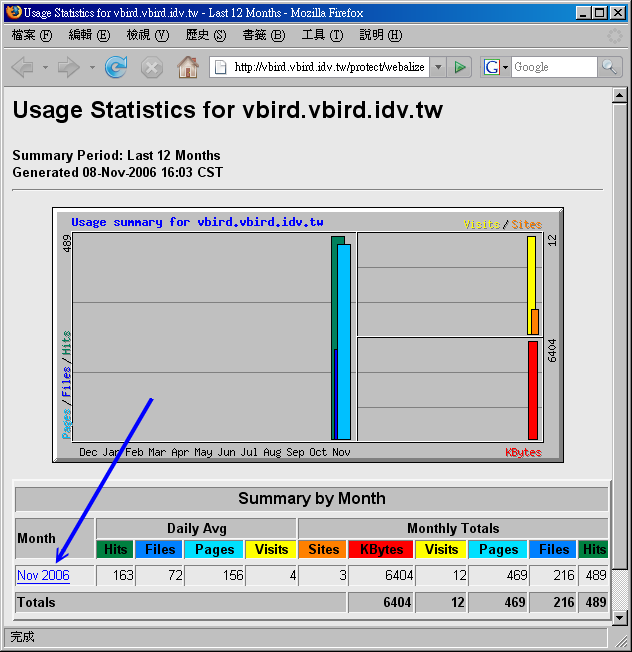
图十、webalizer 分析工具所得的分析画面
在上图当中的箭头处你还可以点选喔，点选后会告知你当月的各项分析结果，很不错吧！
awstats
除了 webalizer 之外，我们其实还可以透过 awstats 这个厉害到不行的 perl 的程序来进行数据分析，
由于这个软件是以 perl 来执行的，所以 请确定你的 mod_perl 已经安装且 CGI 的执行权限已经启动了！
这个套件的特色是：
这套软件不但可以由系统的 cron 来进行分析，甚至还提供浏览器直接以 CGI 的方式来实时更新登录档吶！
真是厉害厉害！鸟哥个人是比较不喜欢使用浏览器来在线更新分析的结果，
因为在你更新分析结果时，怎么知道系统会不会很忙碌？如果系统正在忙碌中，
这套软件的分析可也是很耗费系统资源的吶！所以建议直接以 crontab 的方式来处理即可。
目前官方网站不但提供 tarball 甚至也提供 RPM 来给使用者下载了！真是方便啊！
但是您还是要注意的，这个软件曾经因为安全性的问题导致很多网站的挂点，
所以建议您还是把这个软件的输出结果放置在受保护的目录中喔！底下鸟哥以 6.5 这个 RPM 版本来说明，
请你自行到官方网站下载吧！台湾地区可以到这个地方下载的：
(建议您可以自行前往官方网站下载最新版本的软件较佳！)
假设你将这个 RPM 档案放置到 /root 当中，那么自己 rpm -ivh filename 去安装他吧！
不要跟我说你不会 RPM ～鸟哥是会昏倒的～ @_@
由于这个 RPM 档案将 awstats 的数据通通放置到 /usr/local/awstats 当中去了！
为了自己网页设定上的方便，建议你是可以这样做的：
1. 先将 awstats 提供的 Apache 设定数据给他复制到 conf.d 下
[root@linux ~]# cp /usr/local/awstats/tools/httpd_conf \
> /etc/httpd/conf.d/awstats.conf
[root@linux ~]# vi /etc/httpd/conf.d/awstats.conf
Alias /awstatsclasses "/usr/local/awstats/wwwroot/classes/"
Alias /awstatscss "/usr/local/awstats/wwwroot/css/"
Alias /awstatsicons "/usr/local/awstats/wwwroot/icon/"
Alias /awstats/ "/usr/local/awstats/wwwroot/cgi-bin/"
<Directory "/usr/local/awstats/wwwroot">
Options +ExecCGI
AllowOverride AuthConfig <==这里改成这样，因为要保护！
Order allow,deny
Allow from all
</Directory>
[root@linux ~]# apachectl restart
|
awstats 还真的挺贴心的，因为他释出的文件当中就有关于 Apache 的设定资料，
我们直接将他放到 conf.d/ 那个目录下并且更名后，重新启动 Apache 就生效了！真方便。
再来则是要针对我们的 WWW 登录档来设定啦！配置文件其实是在 /etc/awstats 目录下，
在该目录下有个范例文件为 awstats.model.conf，其实这个配置文件『档名』格式为：
因为鸟哥这部主机名为 linux.vbird.tsai ，所以假设主机名为 linux ，所以档名就应该是
awstats.linux.conf 啰！请你将他复制一个新档，然后这样做：
[root@linux ~]# cd /etc/awstats
[root@linux awstats]# cp awstats.model.conf awstats.linux.conf
[root@linux awstats]# vi awstats.linux.conf
# 找到底下这几行，并且修改一下内容啊：
LogFile="/var/log/httpd/access_log" <==确定登录文件所在的位置
LogType=W <==针对 WWW 的登录档分析
SiteDomain="linux.vbird.tsai" <==主机的 hostname
HostAliases="localhost 127.0.0.1 REGEX[myserver\.com$] www.vbird.tsai"
DirCgi="/awstats" <==能够执行 awstats 的目录
DirIcons="/awstatsicons" <==awstats 一些小图标的目录
Lang="tw" <==重要！这是语系！
|
接着开始测试一下是否可以产生正确的分析资料出来？
[root@linux awstats]# cd /usr/local/awstats/wwwroot/cgi-bin
[root@linux cgi-bin]# perl awstats.pl -config=linux -update \
> -output > index.html
# 那个 -config 后面接的就是 awstats.linux.conf 的意思！会产生 index.html
Update for config "/etc/awstats/awstats.linux.conf" <==请确定配置文件无误
With data in log file "/var/log/httpd/access_log"... <==请确定登录档无误
Phase 1 : First bypass old records, searching new record...
Searching new records from beginning of log file...
Phase 2 : Now process new records (Flush history on disk after 20000 hosts)...
Jumped lines in file: 0
Parsed lines in file: 498
Found 0 dropped records,
Found 0 corrupted records,
Found 0 old records,
Found 498 new qualified records.
[root@linux cgi-bin]# ls -l
awstats112006.linux.txt <==刚刚才建立的重要数据文件！
awstats.pl <==就是刚刚我们下达的执行档！
index.html <==重要输出首页档案
|
接下来让我们赶紧来建立保护目录的 .htaccess 档案吧！请注意，鸟哥这里假设你已经有密码文件了，
所以直接建立档案即可啊！
[root@linux ~]# cd /usr/local/awstats/wwwroot
[root@linux wwwroot]# vi .htaccess
AuthName "Protect awstats data"
Authtype Basic
AuthUserFile /var/www/apache.passwd
require valid-user
|
之后，只要你输入『http://192.168.1.254/awstats/index.html』，就能够看到输出的图表了！
图表有点像这样：
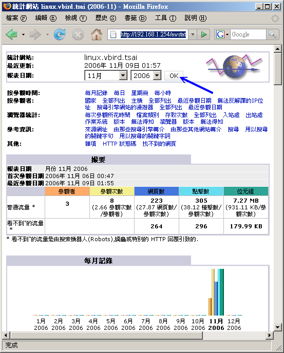
图十一、awstats 分析工具所得的分析画面
事实上，数据非常的多，你可以自行查阅输出的结果。在上图当中的箭头处，
你还可以自己选择曾有的月份数据来进行显示！最后，将分析的动作规定在每天三点的时候跑，
你可以这样做：
[root@linux ~]# vi /usr/local/awstats/wwwroot/cgi-bin/awstats.sh
cd /usr/local/awstats/wwwroot/cgi-bin
perl awstats.pl -config=linux -update -output > index.html
[root@linux ~]# chmod 755 /usr/local/awstats/wwwroot/cgi-bin/awstats.sh
[root@linux ~]# vi /etc/crontab
0 3 * * * root /usr/local/awstats/wwwroot/cgi-bin/awstats.sh
|
这样你就知道你的主机到底有多受欢迎啰！ ^_^！
另外，再次千万拜托！这个软件所在的目录务必要制作密码保护！不要随意释放出来！
甚至上面提供的一些目录的链接你都可以根据自己的主机与喜好来重新修改，
会比较安全的啦！
建立 SSL (https) 网站
了解了一堆 Apache 的功能之后，你要知道 Apache 的这个 http 传输协议是『明码传送』的，
也就是说，如果你的数据在 Internet 上面跑的时候被监听，那你的数据可就很麻烦啦！
举例来说，我们不是有透过 .htaccess 来加密码保护吗？但是你使用浏览器的时候，还是得输入账号密码吧？
这个数据也许在传输的时候会被窃取喔！
那怎么办？我们不是在最前面的地方谈过，有个 https 是利用 SSL 来加密传输的吗？
这个传输的方式就很像 SSH 的联机方式，透过 public key 与 private key 这一对 key pair 来加解密，
那就 OK 的啦！
不过，与 SSH 不同的是， SSH 通常是管理员本身就允许某些人来登入使用的，而客户端也是有特殊需求才会到该主机，
所以 public key 的建置可以直接由服务器来管理即可。 WWW 服务器就不一样了，因为 WWW 服务器提供的数据是给
Internet 上面所有的人浏览的，那么『 为了保护浏览者的机密数据，因此 WWW 服务器的 public key
有必要经过第三方公正单位的验证』来处理，如此一来客户端才能确保这部 WWW 服务器是安全无虞的。
所以我们可以说， apache 加上 SSL 并提供公正单位 (Certificate Authorities, CA) 注册所得的凭证，
是建立你自己 WWW 伺服器具有公信力的一个方式。不过，因为向 CA 单位注册是需要钱的，
所以除非您的 WWW 服务器真的是应用在商业行为上面，否则并不需要向 CA 来注册申请凭证的啦。
那如果我自己想要建立加密的网页 (https) 的话，怎么注册我的 public key ？
没关系，我们可以『向自己注册』！只是如此一来，除非客户端相信你的主机，
否则通常对方可能会拒绝联机啦！ ^_^
那如何达成上述的功能呢？你可能要这样：
- 先以类似 openssl 的指令制作出一把 public key ；
- 将这把 key 向本机注册 (你也可以向 CA 单位注册！)
- 设定 Aapche ，让注册的凭证可以生效；
- 你更可以限制某些目录只能由 https 来进行联机浏览。
那如何达成这些动作呢？也不难，事实上 CentOS 4.x 已经利用一个 mod_ssl 帮我们制作好那把 key 以及凭证了！
你只要安装好这个模块后，可以发现几个咚咚：
- /etc/httpd/conf.d/ssl.conf ：提供给 Apache 读取的配置文件；
- /etc/httpd/conf/ssl.csr/server.csr ：用来申请凭证的档案 (Certificate Signing Request)
- /etc/httpd/conf/ssl.crt/server.crt ：就是那个凭证档案！
- /etc/httpd/conf/ssl.key/server.key ：就是那把 public key 啰！
如果你要向 CA 单位申请凭证的话，那么就需要制作出 ssl.csr 那个档案，然后 CA 单位审核通过后会给你一个
*.crt 的档案，那就是凭证！不过因为我们是向自己注册，所以只需要 ssl.key 以及 ssl.crt 这两个档案即可，
而这两个档案都是由 openssl 这个指令所制作出来的啦！
测试 CentOS 4.x 所提供的凭证
你得先确定你已经安装了 mod_ssl 了，如果还没有安装，请使用 yum install mod_ssl 即可安装完毕。
然后重新启动 apache ，接下来就能够测试啦！使用浏览器连接到你的主机上，
记得使用的网址是：『https://your.hostname/』才是喔！之后你会发现这样的画面：
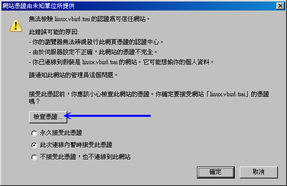
图十二、CentOS 预设凭证
哇哈哈！凭证不成功是怎样？没办法，因为这个凭证并非向 CA 单位注册的嘛！如果你确认这个凭证是 OK 的，
那你可以选择『永久接受此凭证』，未来再进入这个网站时就不会出现这个警告讯息。
如果只是这次想要联机，那就选择『此次联机内暂时接受』吧！不然就不要接受啰。当然，你可以按下箭头所指处，
看一看这个凭证先：
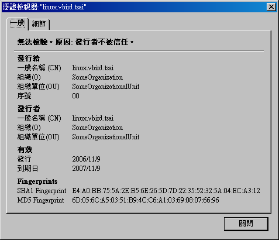
图十三、CentOS 预设凭证
如果你不在乎认证的信息，那么此时你的 https 传输协议已经搞定了！不需要往下继续处理。
如果你想要提供你自己主机的认证凭证，那就继续往下看吧！
建立自己本机的凭证吧！
如果你想要拥有自己的凭证，那就需要作出自己主机的 public key 以及凭证档案，可以这样做：
建立 public key
public key 是放置在 /etc/httpd/conf/ssl.key 目录下的，整个建立的方法真简单：
# 先将旧的文件备份下来：
[root@linux ~]# cd /etc/httpd/conf/ssl.key
[root@linux ssl.key]# mv server.key server.key.raw
# 开始作一支新的 public key 吧！
[root@linux ssl.key]# openssl [动作] -out filename [bits]
参数说明：
[动作]：主要的动作有：
genrsa ：建立 RSA 加密的 public key
req ：建立凭证要求档或者是凭证档案
-out ：后面加上输出的档名，就是那把 key name
bits ：用在 genrsa，加密的密钥长度！
-x509 ：X.509 Certificate Data Management.，一种验证的管理方式
建立一支长度为 1024 bits 的 public key ，注意檔名！
[root@linux ssl.key]# openssl genrsa -out server.key 1024
Generating RSA private key, 1024 bit long modulus
...................................................++++++
..........++++++
e is 65537 (0x10001)
|
这个时候这把 public key 就建好啦！粉简单啦！
凭证档案是放置到 /etc/httpd/conf/ssl.crt 目录下的，所以你应该要这样做：
[root@linux ~]# cd /etc/httpd/conf/ssl.crt
[root@linux ssl.crt]# mv server.crt server.crt.raw
[root@linux ssl.crt]# openssl req -new -x509 -key ../ssl.key/server.key \
> -out server.crt -days 365 -set_serial 123 <==每次序号都得不同！
You are about to be asked to enter information that will be incorporated
into your certificate request.
What you are about to enter is what is called a Distinguished Name or a DN.
There are quite a few fields but you can leave some blank
For some fields there will be a default value,
If you enter '.', the field will be left blank.
-----
Country Name (2 letter code) [GB]:TW
State or Province Name (full name) [Berkshire]:Taiwan
Locality Name (eg, city) [Newbury]:Tainan
Organization Name (eg, company) [My Company Ltd]:VBird
Organizational Unit Name (eg, section) []:VBird
Common Name (eg, your name or your server's hostname) []:linux.vbird.tsai
Email Address []:vbird@linux.vbird.tsai
|
因为你注册的时候需要填写很多的数据，上头就是在输入你的数据啊！等到输入都没有错误后，就可以开始让
Apache 支援啦！
其实 mod_ssl 提供的 /etc/httpd/conf.d/ssl.conf 已经足够啦！
在那个档案里面比较重要的是这些东西：
[root@linux ~]# vi /etc/httpd/conf.d/ssl.conf
Listen 443
<VirtualHost _default_:443>
#DocumentRoot "/var/www/html"
#ServerName www.example.com:443
SSLEngine on
SSLCipherSuite ALL:!ADH:!EXPORT56:RC4+RSA:+HIGH:+MEDIUM:+LOW:+SSLv2:+EXP
SSLCertificateFile /etc/httpd/conf/ssl.crt/server.crt
SSLCertificateKeyFile /etc/httpd/conf/ssl.key/server.key
</VirtualHost>
参数：
Listen ：监听的 port ，这是默认值，最好不要改！
SSLEngine ：是否支持 SSL ，要设成 On 喔！
SSLCipherSuite ：允许 client 端的联机要求机制！
SSLCertificateFile ：凭证档案
SSLCertificateKeyFile ：public key 啊！
[root@linux ~]# apachectl restart
|
用默认值即可！接下来你就可以检查看看你的凭证了！同样的在浏览器的网址列以 https 输入网址，结果会是如何？
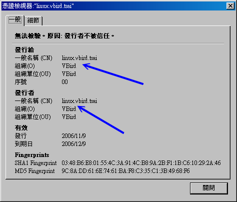
图十四、CentOS 预设凭证
上图中的组织等单位，就变成自己啰！真是有趣吧！ ^_^
将 http 与 https 的网页分开
刚刚我们处理的是 Apache 的 SSL ，也就是说原本的 WWW 资料可以分别使用 http 及 https 来浏览。
那我可不可以将这两个传输协议分开呢？举例来说，主网页 (http) 在 /var/www/html 底下，
但 https 则仅能在 /var/www/www 目录中。是可以的，同样透过虚拟主机来处理即可！很简单喔！
[root@linux ~]# vi /etc/httpd/conf.d/ssl.conf
# 找到底下这两行，并且将他改掉！
DocumentRoot "/var/www/www"
ServerName *:443 <==意思是说，任何主机名都是到上述的目录去！
[root@linux ~]# apachectl restart
|
Ya！从此你的 https 与 http 是看到不同的地方啰！这样说，可以理解吧！ ^_^
一些安全性管理的网页
还有一些可以玩的东西喔！让你的 Apache 可以负责一些小程序的处理！
来瞧一瞧吧！
让 SSH 可以使用后门联机
我们在 SSH 章节里面曾经谈到 SSH 最好不要对整个 Internet 开放对吧！所以你最好只要针对几个网域或者是 IP
开放他们能够以 ssh 登入你的服务器啦。那么我能不能透过 WWW 网页填写一些重要的资料，让我可以修改主机的防火墙？
然后我可以进入我的 Linux 主机呢？呵呵～是可以的！不过，你就得要自己小心啦！
因为既然你可以透过这个网页来填写你的 IP ，
那么如果这个网页被其他人浏览了，那就危险啦！所以，这个网页的数据请将他放置到受保护的目录喔！
这个网页档案数据的下载点在：
假设你的保护目录在 /var/www/html/protect ，那么请到该目录下，然后将取得的 tarball 解压缩，
例如：『 tar -zxvf apache.ssh.tgz 』，这样就 OK 啦！
请特别注意，鸟哥的这个 PHP 网页其实写的很阳春，而且利用到很多 apache 的权限，
因此这个网页所在的目录其实权限是开放很大的！所以，你必需要很清楚的知道如何设定权限方面的问题才行。
基本的功能是这样的：
- 假设你的 Apache 所设定的保护目录或 SSL 的目录在 $protectdir 当中，在预设的状态下鸟哥将他指定到
/var/www/html/protect 这个目录喔；
- 整个数据被鸟哥通通放置到 $protectdir/ssh 目录下；
- $protectdir/ssh/index.php 就是主程序，就是要有他才行！这个档案请使用 vi 进去修改，
在该档案开头的四行请自行改写成你所需要的账号/密码相关数据；
- $protectdir/ssh/temp/ 是网页会主动改写的目录，请让他可以被 apache.apache 这个 owner.group 所写入才行！
而在这个目录下还有两个档案， ip.new 及 iptables.ssh.sh 也需要是 apache.apache 的权限！
- $protectdir/ssh/temp/ip.sh 是用来判断是否需要加入防火墙功能的一个 script，
这个档案也需要修改，请你修改这个档案内的 basedir 那个变量即可。然后，
请你将他放置到 /etc/crontab 的执行当中，每 3 或 5
分钟执行一次，例如『*/3 * * * * root $protectdir/ssh/temp/ip.sh 』
注意，那个 $protectdir 请填写正确的目录，例如 /var/www/html/protect ！
- 开启浏览器，填入『http://your.host/protect/ssh/』就会出现网页啦！请自行测试先！
如此一来，系统每 3 分钟会主动去执行 IP 的检查，所以如果你在该网页填写了你的 IP ，
则 3 分钟内系统会将该笔数据加入防火墙内，如此一来你就可以利用该 IP 登入 ssh 这个服务了！
再说一遍，这个程序仅是提供给您暂时测试用的，有需要才下载去使用，
否则不要随意将他放置到 Internet 上面啊！鸟哥不保证执行的后果喔！
防砍站软件
几个比较知名的网站管理员大概都有这样的困扰，那就是网站常被砍站软件所强力下载，结果造成主机的
CPU loading 过重，最后竟然会导致死掉～唉！真是的～人怕出名猪怕肥吶！先来解释一下什么是砍站吧！
所谓的『砍站』，就是以类似多点联机下载的持续性讯息传递软件进行网站数据的下载，而且，
一启用该软件，该软件就将『整个网站』的内容都给他 download
下来，很厉害吧！没错！是很厉害，但是却也害死人了～怎么说呢？
因为这种软件常常会为了加快 download 的速度，所以采用多点联机的方式，也就是会持续不断的向 Server
发出要求封包，而由于这些封包并不见得能够成功的让 Server 把数据传导给 Client
端，常常会无法投递就是啦！这样的结果就是.....造成 Server 要一直不断的响应，又无法正确的响应出去，
此外，要求太过频繁，结果主机应接不暇，最后....就当机了...真的是林老师ㄌㄟ～
我们这个小站的主机古早以前，就是因为这样的原因，导致服务常常断断续续的，并且，由于 CPU loading
太高，结果让正常联机进来看数据的网友没有足够的资源，因此网页开启的速度就变的很慢～唉～
这些砍站的人，也太不道德啦！
由于这种砍站软件真的很麻烦，一不注意马上就又会被砍站而当机，三天两头就要重新启动一次，完全让
Linux 的稳定性无法发挥！真是气死了～后来，鸟哥就自行写了一个 scripts 来挡这样的
IP ！我的作法是这样的：
- 由于砍站软件会多点连续下载，因此，同一个 IP 在同一个时间内，会有相当多的联机发生；
- 由于他是重复不断的要求联机，因此刚刚建立的联机在达成下载的目的后，会立刻死掉，
而又多生出其他的联机出来，因此，这个时候他的联机情况就变的相当的不正常了！
- 由于某些较旧的砍站软件并不会『欺骗』主机，所以，会在主机的登录文件里面记录住 Teleport 的标记！
- 既然如此的话，那么我就让我的主机每分钟去检查两个东西(1)先检查 log file
，如果有发现到相关的 Teleport 字词，就将该 IP 抵挡掉；(2)使用 netstat
来检查同一个 IP 的同时联机，如果该联机超过一个值(例如同时有 12 个联机)的话，那么就将该 IP 抵挡掉！
- 此外，由于上面的方案可能会将 Proxy 的 Client 端也同时抵挡掉，真是可怜啊！
这个时候，这支程序就会主动的将(1)的情况的主机抵挡 3 天，至于(2)的情况则抵挡2小时！
过了该抵挡的时限后，该 IP 即可又连上我们的主机了！
大致上就是这样吧！这样的一程序需要与 iptables 相互配合，所以，请先查阅一下 简易防火墙设定那一篇文章，然后再来下载这支程序吧！
这支程序您可以在底下的网址下载喔！
详细的安装步骤鸟哥已经以中文写在该档案里面了，所以请先查看一下该档案的前面说明部分吧！此外，
Study Area 的 netman 大哥也已经开发了一套很棒的防砍站的程序了！
在防堵砍站的原理上面是完全相同的，不过写法可能不是很雷同就是了！如果有需要的话，也可以前往
Study-Area 搜寻一下啰！
重点回顾
- WWW 的传输协议使用 HTTP (Hyper Text Transport Protocol) ，最早是由欧洲核物理实验室的伯纳斯-李所发展的；
- WWW 在 server/client 端主要传递的讯息数据以 HTML (Hyper Text Markup Language) 语法为主；
- http://www.w3c.org 为制订与发布 WWW 标准语法的组织，您撰写网页最好依据该站之标准为宜；
- Apache 是达成 WWW 服务器的一项软件，至于客户端的浏览则使用浏览器，目前可使用 firefox
- 浏览器可达成的主机链接不止 http，可在网址列输入对应的『协议://主机[:port]/资源』即可取得不同的数据；
- 若要 WWW 服务器可以达成与用户信息互动，尚须要网页程序语言 (如PHP, perl 等) 以及数据库软件 (如 MySQL,
portgresql 等)；
- 因为 http 使用的是明码传送，目前 WWW 可利用 SSL 等机制来进行数据加密的传输；
- Apache 的配置文件其实只有 httpd.conf 而已，其他的配置文件都是被 Include 进来的；
- Apache 的首页目录以 DocumentRoot 决定，首页档案则以 DirectoryIndex 决定；
- Apache 可以透过虚拟主机的设定以指定不同主机名到不同的 DocumentRoot 下；
- Apache 是多线程的软件，可以启动多个程序来负责 WWW。主要的模块有 prefork 及 worker，
至于最大可联机的数量则以 MaxClients 来决定。
- 若要正确的让浏览器显示网页的编码格式，最好在网页上宣告语系，并将 Apache 的配置文件 httpd.conf
内的 AddDefaultCharset 设定值取消；
- 在 Apache 可浏览的目录权限设定上 (Options 参数)，最好将 Indexes拿掉；
- 透过 AllowOverride 与 .htaccess 可让用户在自己管理的目录下制订自己的风格；
- Apache 本身提供一个 apachectl 的 script 让使用者得以快速管理其 apache 的服务；
- Apache 分析的数据如果比较重要时，务必以 SSL 或者是保护目录来保护。
课后练习
- 请问 LAMP 这个服务器代表什么意思？
这个名词代表了 Linux + Apache + MySQL + PHP 这个 WWW 服务器的组成！
- Apache 的配置文件档名一般为何？
Apache 的配置文件档名为 httpd.conf ，不过，由于 httpd.conf 内容参数可以使用『
include "额外配置文件名"』，所以也可能具有其他的额外配置文件喔！
- 在 Apache 的配置文件当中，哪一个参数是用来设定『主网页』的？
设定主网页的参数为：DocumentRoot 喔！后面接的是主网页放置的『目录』！
- 哪一个指令用来重新启动与关闭 Apache ？(请以 Apache 本身提供的功能来说明)
其实不论是 RPM 还是 Tarball 都是使用 apachectl 这个档案来启动 apache 的，不过 RPM
已经将该档案整合到 /etc/init.d/httpd 里面去而已
- 当我使用 ps -aux 的时候，发现好多的 httpd... 的程序，这是正常的吗？
最多可以有几个程序是在那个档案的那个参数所设定的？！
由于 Apache 预设为多线程，所以启动多个 processes 是正常的。至于启动几个 process 则由很多设定所处理，
包括 MinSpareServers, MaxSpareServers, MaxClients 等等。
- 又，呈上题，这些程序 (process) 的 owner 与 group 是谁？该察看那个配置文件的那个参数？
同样察看 httpd.conf 里面的 User 与 Group 这两个设定值！
- 如果今天我以 http://your.ip 结果却发现浏览器出现类似 FTP
的画面(会列出该目录下的所有档案)，这是什么原因造成的？该如何避免？
这是由于在 httpd.conf 里面，针对该目录的设定参数『 Options 』当中，设定了 Indexes
这个设定值，导致当找不到主页时(通常是 index.html)，就会将该目录下的所有档案秀出来！解决的方法就是拿掉
Options 里面的 Indexes 设定值即可！
- 在 Apache 里面 .htaccess 这个档案的功能为何？
可以用来取代 httpd.conf 里面的设定参数！创造属于使用者自己的 Apache 风格！
- 若你之前浏览过网页，但显示的数据并非正确的中文。后来按照上文的说明修改了中文的设定，却还是无法看到中文。
请问可能的原因为何？
由于你曾经浏览过该网站的网页，所以该网页会被你的浏览器所暂存 (cache)，因此你应该可以这样做：
- 在同一页面下按下『 reload 』来重载；
- 清除掉所有的浏览器快取；
- 将原本的网页在服务器端改名，并让浏览器浏览新的网页名称。
- PHP 的程序代码一定要使用 <?php 程序代码 ?> 吗？有没有替代方案？
预设的情况下，你应该要输入 <?php ?> 才能写入 PHP 的程序。不过早期的程序或许都以 <? ?> 来撰写的。
如果想要让该种方式生效的话，你可以进入 /etc/php.ini 档案中，修改『short_open_tag = On』这个设定项目即可。
参考数据
2003/01/14：第一次完成
2003/01/18：新增问题讨论：关于中文的说明
2003/01/21：新增问题讨论：关于 PHP 无法使用的问题说明
2003/04/28：加入砍站软件的程序说明
2003/04/29：加入 PHP 原始码程序优化模块 MM Cache 说明。
2003/05/07：加入 ab 这个效能测试的说明！
2003/05/30：使用 Tarball 安装时常常发生一些困扰，加入 User/Group 的设定说明！
2003/09/10：将原本在 2002/12 安装 Tarball 的套件更新为目前 2003/09 最新的版本来安装喔！
2003/10/02：加入一些问题的克服之道喔！
2004/03/25：修订2004/03/25：修订 MySQL 安装的流程！第四步骤加入权限的修订！
2004/09/03：修改了 MMCache 的主网页。
2006/10/21：将旧的文章移动到 此处
2006/11/09：花了很多时间修改，不再提供 tarball 的安装需求了！
2006/11/10：预先释出版本，包括修改 MM Cache 成为 eaccelerator、增加 SSL 修改 awstats 之安装等。
2010/02/08：网友告知，SSL 建置的 genrsa 应该是 private key 而非 public key 喔！这部份鸟哥误解了。
|
|